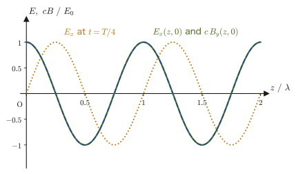
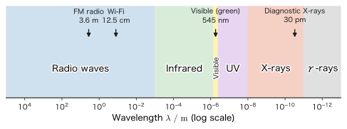
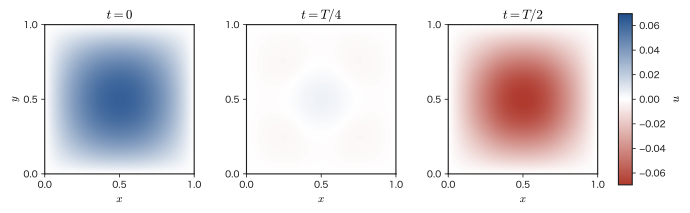

Chapter 42Maxwell's Equations and Electromagnetic Waves
There is a delay of several seconds between the flash of lightning and the sound of thunder because the speed of light is far greater than the speed of sound. But what, exactly, is light? In Part II we studied the general properties of waves (superposition, interference, reflection and refraction) using strings and sound waves as examples, and in Chapter 13 and Chapter 14 we saw that light also behaves as a wave and that its speed $c$ is finite and can be measured. Section 14.6 introduced the statement “light is an electromagnetic wave,” but did not yet show why this is so. Starting from the laws of electricity and magnetism alone, this chapter arrives at that reason—the electromagnetic wave, which is the true nature of light.
The route consists of three stages. (1) When the laws derived in Chapters 35 through 41 are simply lined up side by side, exactly one place remains that contradicts the conservation of charge (the continuity equation, Section 37.2). As in today's textbooks, we explain this contradiction through the failure of Ampère's law in a circuit containing a capacitor, and by adding a term called the displacement current we complete the four Maxwell's equations. (2) Deriving from the four equations in vacuum, without skipping a single line, that the electric field satisfies a wave equation, we find that the speed of the wave is $c=1/\sqrt{\varepsilon_0\mu_0}$, a quantity determined solely by the constants of electricity and magnetism, and that its value agrees with the measured speed of light. (3) We examine the facts that electromagnetic waves are transverse waves, that they carry energy (the Poynting vector), and that they are classified into radio waves, visible light, X-rays, and so on according to wavelength, and then look back over the whole of Part V. Incidentally, it became clear later that electric and magnetic fields change their appearance depending on the state of motion of the observer (the four-vector formulation of electromagnetism, studied in Chapter 58), so this chapter is also a natural entrance to the special theory of relativity in Part VIII.
- Verify concretely that Ampère's law leads to a contradiction in a circuit containing a capacitor, and introduce the displacement current $\pdiff{\bm D}{t}$ so as to be consistent with conservation of charge (the continuity equation), thereby completing the Ampère–Maxwell law $\rot\bm H=\bm j+\pdiff{\bm D}{t}$
- Survey the four Maxwell's equations (integral and differential forms) at a glance, and sort out which experimental facts of electromagnetism each of them corresponds to
- After confirming the meaning of the Laplacian $\nabla^2\bm E$ acting on a vector field, derive, without skipping a single line, the wave equation for the electric field $\nabla^2\bm E=\dfrac{1}{c^2}\pdiff{^2\bm E}{t^2}$ ($c=1/\sqrt{\varepsilon_0\mu_0}$) from Maxwell's equations in vacuum and the vector identity $\rot(\rot\bm E)=\grad(\operatorname{div}\bm E)-\nabla^2\bm E$
- Examine the solutions for plane electromagnetic waves, and derive the fact that the electric field, the magnetic field, and the propagation direction are mutually perpendicular ($\bm E\perp\bm B\perp\bm k$; electromagnetic waves are transverse waves) as well as the relation $E=cB$
- Introduce the density of the energy carried by the electromagnetic field and the Poynting vector, which gives the direction and rate at which that energy flows through space, and derive the equation of energy conservation (Poynting's theorem)
- Understand that electromagnetic waves are classified into radio waves, visible light, X-rays, and so on according to wavelength (frequency) (the electromagnetic spectrum), and, through an example in which a two-dimensional wave equation is solved completely with boundary conditions, get a feel for the ideas behind waveguides and cavity resonators
Source notes: Yasuhide Mochizuki, Physics Notes: Electromagnetism, pp. 31–32.
42.1 Displacement Current and the Ampère–Maxwell Law
Ampère's law, which we studied in Section 38.5, can be written in differential form, for the magnetic field $\bm H$ produced around a current $\bm j$, as
$$ \rot\bm H=\bm j $$(the integral form is $\oint_C\bm H\cdot\dd\bm\ell=I_{\text{enc}}$, which says that the line integral equals the total current passing through the closed curve $C$). This law is correct for steady currents (currents that do not change with time), such as straight currents and solenoids, and agrees well with experiment. However, when we consider a situation in which the current changes with time, as in a circuit containing a capacitor, we notice that a contradiction that cannot be overlooked lurks in this law.
(In this chapter, besides the electric field $\bm E$ and the magnetic flux density $\bm B$, the electric displacement (electric flux density) $\bm D$ and the magnetic field $\bm H$ also appear. In vacuum $\bm D=\varepsilon_0\bm E$ and $\bm B=\mu_0\bm H$, so you may read $\bm D,\bm H$ as nothing more than constant multiples of $\bm E,\bm B$. We studied the differences in matter in Chapter 41.)
As in Figure 42.1, consider a circuit in which a capacitor is being charged with a constant current $I$, and take a closed curve $C$ that goes once around the wire. The integral form of Ampère's law, $\oint_C\bm H\cdot\dd\bm\ell=I_{\text{enc}}$, holds under the premise that whichever surface bounded by $C$ we choose, the answer should be the same ($C$ is fixed, but there are infinitely many ways to choose a surface with it as its boundary). Yet:
- (a) If we choose the flat surface $S_1$ that cuts straight across the wire, the current passing through $S_1$ is simply the wire's current $I$, so $I_{\text{enc}}=I$.
- (b) If we choose the surface $S_2$, bulging like a balloon, that avoids the wire and passes between the plates, no wire passes through $S_2$ (there is no wire between the plates), so $I_{\text{enc}}=0$.
So it turns out that, although we use the same closed curve $C$, the answer is $I$ or $0$ depending on the choice of surface, and a law that behaves in this way is self-contradictory. A clue to resolving this contradiction comes into view when we notice that $S_2$ is crossed not by a wire but by “an electric field that grows stronger with time”—presumably there should exist there some other “current-like thing” that plays the same role as the wire's current $I$.
Derivation: Showing the need for the displacement current from the contradiction with the continuity equation
Let us check the intuitive argument of Figure 42.1 more rigorously using the differential form. If Ampère's law were always to keep the form $\rot\bm H=\bm j$, then taking the divergence of both sides, we would need
$$ \operatorname{div}(\rot\bm H)=\operatorname{div}\bm j $$to hold. But the left-hand side is identically $0$ for any vector field $\bm H$ (University Mathematics, Theorem 19.1: “the curl has no divergence,” $\operatorname{div}(\rot\bm f)=0$). Therefore, if $\rot\bm H=\bm j$ holds, then
$$ \operatorname{div}\bm j=0 $$would have to hold always. On the other hand, conservation of charge (the continuity equation, Section 37.2) was
$$ \operatorname{div}\bm j=-\pdiff{\rho}{t} $$Comparing these two, we see that $\rot\bm H=\bm j$ holds without contradiction only when $\pdiff{\rho}{t}=0$, that is, only when the charge density does not change with time at any point. This agrees precisely with the fact that Ampère's law was originally derived for steady currents (situations in which neither the current nor the charge distribution changes with time). But in a situation like that of Figure 42.1, where charge accumulates on the capacitor plates, $\pdiff{\rho}{t}\neq0$ at the surfaces of the plates, and $\rot\bm H=\bm j$ cannot be used as it stands.
We therefore wish to add some other term $\bm X$ to the right-hand side, giving the form $\rot\bm H=\bm j+\bm X$, so that taking the divergence gives $0=0$ without contradiction.
$$ \operatorname{div}(\rot\bm H)=0=\operatorname{div}\bm j+\operatorname{div}\bm X \qquad\therefore\ \operatorname{div}\bm X=-\operatorname{div}\bm j=\pdiff{\rho}{t} $$Now recall Gauss's law (Section 35.4), $\operatorname{div}\bm D=\rho$. Differentiating both sides with respect to time (the divergence, which is a spatial derivative, and the time derivative are operations on independent variables, so their order can be exchanged), we obtain
$$ \operatorname{div}\left(\pdiff{\bm D}{t}\right)=\pdiff{\rho}{t} $$which means precisely that we may set $\bm X=\pdiff{\bm D}{t}$. That is, if we modify the law to the form
\begin{equation} \rot\bm H=\bm j+\pdiff{\bm D}{t} \label{eq:42-ampere-maxwell} \end{equation}then taking the divergence gives identically $0=0$, and there is no longer any contradiction with conservation of charge. This is the modification that Maxwell made.
∎
Definition 42.1: Displacement current density
We call $\pdiff{\bm D}{t}\ [\mathrm{A/m^2}]$ (the rate of change with time of the electric displacement $\bm D$), which appears on the right-hand side of Eq. \eqref{eq:42-ampere-maxwell}, the displacement current density. Unlike the conduction current $\bm j$, in which charges actually move through a wire, here no charge itself moves (even in vacuum it arises merely because $\bm D=\varepsilon_0\bm E$ changes with time). However, as regards the ability to produce a magnetic field, it plays exactly the same role as an ordinary current—this is the meaning of the seemingly odd name “displacement current.” The displacement current through a surface $S$ (the current itself, in units of $\mathrm A$) is $\displaystyle I_{\mathrm d}=\iint_S\pdiff{\bm D}{t}\cdot\dd\bm S$.
Why is it called a “displacement” current?
In a dielectric, $\bm D=\varepsilon_0\bm E+\bm P$ ($\bm P$ is the polarization, Chapter 41), so we can split
$$ \pdiff{\bm D}{t}=\varepsilon_0\pdiff{\bm E}{t}+\pdiff{\bm P}{t} $$into two parts. The second term $\pdiff{\bm P}{t}$ is a current due to charges that actually move when the polarization—the bound positive and negative charges being slightly displaced (shifted) from their equilibrium positions—changes with time, and it is a genuine motion of charge. In vacuum only the first term $\varepsilon_0\pdiff{\bm E}{t}$ remains, and although no charge is moving, its ability to produce a magnetic field is the same. The name “displacement” derives from this displacement of the charges in the dielectric. That this bold extension, which grants the role of a current even where there is no motion of charge, is correct was shown by the fact that the equations including it predict the existence of electromagnetic waves (Section 42.3), and that this was confirmed by experiment (the “History” box in Section 42.3).
Law 42.1: Ampère–Maxwell law
The magnetic field $\bm H$ is produced with the sum of the conduction current density $\bm j$ and the displacement current density $\pdiff{\bm D}{t}$ serving as the “source of the vortex.”
Integral form: $\displaystyle\oint_C\bm H\cdot\dd\bm\ell=\iint_S\left(\bm j+\pdiff{\bm D}{t}\right)\cdot\dd\bm S$ ($S$ is any surface bounded by $C$)
Differential form: $\displaystyle\rot\bm H=\bm j+\pdiff{\bm D}{t}$
Checking against the surface $S_2$ of Figure 42.1: the conduction current through $S_2$ is $0$, but the electric field between the capacitor plates grows stronger as charging proceeds, so $\pdiff{\bm D}{t}\neq0$, and the displacement current through $S_2$ is exactly equal to the wire's current $I$ (we verify this numerically in Example 42.1). In this way the same answer $I$ is obtained whichever of the surfaces $S_1$ and $S_2$ we choose, and the contradiction is resolved.
Example 42.1: The necessity of the displacement current and its magnitude
(a) In the situation of Figure 42.1, explain, using the continuity equation, what contradiction arises if we use the original Ampère's law $\rot\bm H=\bm j$ (the form without the displacement current). (b) A parallel-plate capacitor of area $A=4.0\times10^{-3}\ \mathrm{m^2}$ is being charged by a constant current $I=3.0\ \mathrm A$ (starting from charge $0$ at time $t=0$). Find the displacement current $I_{\mathrm d}$ between the plates, and verify that it agrees with the conduction current $I$ in the wire (the region between the plates is vacuum; neglect edge effects).
Solution. (a) Taking the divergence of both sides of the original law $\rot\bm H=\bm j$, the left-hand side is always $0$ by the identity $\operatorname{div}(\rot\bm H)=0$ (University Mathematics, Theorem 19.1), so $\operatorname{div}\bm j=0$ would be required. However, charge accumulates on the plates of the capacitor, so at the plate surfaces the charge density $\rho$ changes with time, and by the continuity equation $\operatorname{div}\bm j=-\pdiff{\rho}{t}$ (Section 37.2) we have $\operatorname{div}\bm j\neq0$. Since $\operatorname{div}\bm j=0$ (what the original law requires) and $\operatorname{div}\bm j\neq0$ (what conservation of charge requires) are incompatible, the original law must be modified into a form that includes the displacement current.
(b) Since the plates are charged by a constant current, the charge at time $t$ is $Q(t)=It$ (with $Q=0$ at $t=0$). If edge effects are neglected, the magnitude of the electric field between the plates is, by the parallel-plate capacitor formula (Section 36.6), $E(t)=\dfrac{\sigma}{\varepsilon_0}=\dfrac{Q(t)}{A\varepsilon_0}=\dfrac{It}{A\varepsilon_0}$. Therefore,
$$ \pdiff{E}{t}=\frac{I}{A\varepsilon_0} $$and the displacement current density is $j_{\mathrm d}=\varepsilon_0\pdiff{E}{t}=\dfrac{I}{A}$; multiplying this by the area $A$, the displacement current is
$$ I_{\mathrm d}=j_{\mathrm d}A=\varepsilon_0\pdiff{E}{t}\cdot A=\frac{I}{A}\cdot A=I $$so we see that it agrees exactly, at all times (as an identity between the formulas), with the conduction current $I$ in the wire—this is a natural result, since we started from $Q=It$ (the rate of increase of the charge stored in the capacitor is itself the charging current). In concrete numbers, $\pdiff E/\pdiff t=I/(A\varepsilon_0)=3.0/(4.0\times10^{-3}\times8.854\times10^{-12})\approx8.47\times10^{13}\ \mathrm{V/(m\cdot s)}$ (the electric field is growing at a tremendous rate), $j_{\mathrm d}=I/A=3.0/(4.0\times10^{-3})=750\ \mathrm{A/m^2}$, and $I_{\mathrm d}=750\times4.0\times10^{-3}=3.0\ \mathrm A=I$.
We have thus confirmed that the “current” through the surface $S_2$ (the surface passing between the plates) agrees exactly with the current $I$ through the surface $S_1$ (the surface cutting the wire), and the contradiction in Figure 42.1 is resolved.
Example 42.2: Magnetic field produced by the displacement current — between the plates of a disk capacitor
A parallel-plate capacitor with disk-shaped plates of radius $R=2.0\ \mathrm{cm}$ is being charged by a constant current $I=3.0\ \mathrm A$ (starting from charge $0$ at time $t=0$; the region between the plates is vacuum, and edge effects are neglected). (a) Find the magnitude $H(r)$ of the magnetic field at a point between the plates at distance $r\ (\lt R)$ from the axis (the straight line joining the centers of the two plates). (b) Find numerical values of $H$ and of the magnetic flux density $B=\mu_0H$ at $r=1.0\ \mathrm{cm}$. (c) Verify that the value at $r=R$ connects with the value at $r=R$ of the magnetic field $H=I/(2\pi r)$ around the wire outside the capacitor.
Solution. (a) Since the plate charge is $Q=It$, the magnitude of the electric displacement between the plates is $D=\sigma=\dfrac{Q}{\pi R^2}=\dfrac{It}{\pi R^2}$ (a uniform field, since edge effects are neglected), and its rate of change with time is
$$ \pdiff Dt=\frac{I}{\pi R^2} $$which does not depend on $r$. By symmetry, $\bm H$ points in the azimuthal direction around the axis, and its magnitude is constant on a circle at distance $r$ from the axis. We therefore take the circle of radius $r$ centered on the axis as the closed curve $C$, and the disk bounded by it and parallel to the plates as the surface $S$ ($S$ lies between the plates, so no conduction current passes through it). In the integral form of the Ampère–Maxwell law (Law 42.1)
$$ \oint_C\bm H\cdot\dd\bm\ell=\iint_S\left(\bm j+\pdiff{\bm D}{t}\right)\cdot\dd\bm S $$the left-hand side is $H\cdot2\pi r$, and the right-hand side, since $\bm j=\bm0$ and $\pdiff{\bm D}{t}$ is perpendicular to the surface and uniform, is $\dfrac{I}{\pi R^2}\cdot\pi r^2=\dfrac{Ir^2}{R^2}$. Hence $H\cdot2\pi r=Ir^2/R^2$, that is,
$$ H(r)=\frac{I\,r}{2\pi R^2}\qquad(r\lt R) $$(the unit is $\mathrm{A\cdot m/m^2}=\mathrm{A/m}$, which agrees with the unit of $H$). The magnetic field increases in proportion to the distance from the axis.
(b) $H(1.0\ \mathrm{cm})=\dfrac{3.0\times0.010}{2\pi\times(0.020)^2}=\dfrac{0.030}{2.513\times10^{-3}}\approx11.9\ \mathrm{A/m}$. $B=\mu_0H=1.2566\times10^{-6}\times11.94\approx1.5\times10^{-5}\ \mathrm T$ (comparable in magnitude to the geomagnetic field).
(c) At $r=R$, $H(R)=\dfrac{I}{2\pi R}=\dfrac{3.0}{2\pi\times0.020}\approx23.9\ \mathrm{A/m}$. On the other hand, outside the plates ($r\gt R$), if we extend the surface $S$ beyond the outer edge of the plates, $S$ intercepts the electric field between the plates (over an area of just $\pi R^2$), so the total displacement current through it is $\dfrac{I}{\pi R^2}\cdot\pi R^2=I$, which gives $H\cdot2\pi r=I$, that is, $H=I/(2\pi r)$. This is the same expression as for the magnetic field around the wire, and at $r=R$ it gives $I/(2\pi R)=23.9\ \mathrm{A/m}$, which connects exactly with the expression between the plates. In other words, between the plates the displacement current actually produces the same magnetic field as the “current $I$” in the wire does.
42.2 The Four Maxwell Equations — The Completion of Electromagnetism
Now that the last piece, the displacement current, is in place, the four equations that describe all phenomena of electricity and magnetism in a unified way—Maxwell's equations—are complete. Let us list here, all at once, the laws that we derived separately in the earlier chapters.
| Name | Integral form | Differential form | Meaning (in a word) |
|---|---|---|---|
| ① Gauss's law | $\displaystyle\oint_S\bm D\cdot\dd\bm S=Q_{\text{enc}}$ | $\operatorname{div}\bm D=\rho$ | Electric field lines emanate from charges |
| ② Gauss's law for the magnetic field | $\displaystyle\oint_S\bm B\cdot\dd\bm S=0$ | $\operatorname{div}\bm B=0$ | Magnetic field lines have no sources (no magnetic charges) |
| ③ Faraday's law of induction | $\displaystyle\oint_C\bm E\cdot\dd\bm\ell=-\dfrac{\dd}{\dd t}\displaystyle\iint_S\bm B\cdot\dd\bm S$ | $\rot\bm E=-\pdiff{\bm B}{t}$ | A time-varying magnetic flux density creates a vortex of electric field |
| ④ Ampère–Maxwell law | $\displaystyle\oint_C\bm H\cdot\dd\bm\ell=\displaystyle\iint_S\left(\bm j+\pdiff{\bm D}{t}\right)\cdot\dd\bm S$ | $\rot\bm H=\bm j+\pdiff{\bm D}{t}$ | A current and a time-varying electric displacement create a vortex of magnetic field |
(Note: In the table, $\rho,\bm j$ are the densities of the free charge and of the conduction current. The polarization charge and the magnetization current in matter are contained in the definitions of $\bm D,\bm H$ ($\bm D=\varepsilon_0\bm E+\bm P$, $\bm H=\bm B/\mu_0-\bm M$).)
Law 42.2: Maxwell's equations
The electric field $\bm E$, electric displacement $\bm D$, magnetic flux density $\bm B$, magnetic field $\bm H$, charge density $\rho$, and current density $\bm j$ satisfy the four equations in Table 42.1. If we combine these with the constitutive equations that express the properties of matter ($\bm D=\varepsilon_0\bm E$ and $\bm B=\mu_0\bm H$ in vacuum; in the dielectrics and magnetic materials seen in Chapter 41, relations that reflect the polarization and the magnetization, respectively), we can in principle calculate every phenomenon of electricity and magnetism (electrostatic fields, static magnetic fields, electromagnetic induction, and the electromagnetic waves that we study in this chapter).
That the integral and differential forms express the same content follows from the divergence theorem (Gauss's theorem) and Stokes's theorem learned in University Mathematics, Chapter 20: replacing the surface integral $\oint_S\bm D\cdot\dd\bm S$ over a closed surface $S$ by the volume integral of $\operatorname{div}\bm D$ over the whole volume $V$ bounded by $S$ (the divergence theorem) corresponds to ①; making the same replacement for $\oint_S\bm B\cdot\dd\bm S$ corresponds to ②; and replacing the line integral $\oint_C\bm E\cdot\dd\bm\ell$ by the surface integral of $\rot\bm E$ over the whole surface $S$ bounded by $C$ (Stokes's theorem in University Mathematics, Section 20.5) corresponds to ③ and ④ (in ③, we may take $\dd/\dd t$ outside the integral, regarding the surface $S$ as not changing with time). The two forms are equivalent, and we may use whichever is more convenient for the calculation at hand.
Of the four equations, ① (Gauss's law) was derived from Coulomb's law in Section 35.3. ③ (Faraday's law) was derived in Section 40.2. ④ (the Ampère–Maxwell law) is the original Ampère's law (Section 38.5) with the displacement current added, as derived in Section 42.1. ② ($\operatorname{div}\bm B=0$) was derived in Section 38.5 from the fact that magnetic field lines have no ends anywhere and always close on themselves. The basis of this fact is that no isolated magnetic pole (magnetic monopole) has ever been found in experiments. That is, ② expresses the property of nature that, whereas electric charge exists in the form of isolated positive and negative particles, magnetism has no such counterpart, and we accept it as a fundamental law.
Intuition: The physical meaning of divergence and curl, revisited
The meanings of divergence $\operatorname{div}$ (sources and sinks) and curl $\rot$ (vortices) were examined in detail in Section 35.5 and Section 40.2. Reading the four equations of Table 42.1 again in these terms, we obtain the following. ① “Where there is charge, there are sources of electric field lines.” ② “Magnetic field lines have no sources (they always form closed loops).” ③ “When the magnetic flux density changes with time, a vortex of electric field forms around it.” ④ “Where there is a current, or a time variation of the electric displacement (the displacement current), a vortex of magnetic field forms.” You will notice that ③ and ④ have a very similar structure—the cause of the vortex of electric field is the time variation of the magnetic field, and the cause of the vortex of magnetic field is the current and the (time variation of the) electric field—and, as we shall see in Section 42.3, this “near-symmetric structure,” so to speak, is exactly what makes possible the electromagnetic wave, in which the electric and magnetic fields propagate through space while generating each other.
Example 42.3: What it means that magnetic monopoles do not exist
What does the equation $\operatorname{div}\bm B=0$ mean physically? Explain, contrasting it with $\operatorname{div}\bm D=\rho$ (Gauss's law). Also, predict from this law what happens when a bar magnet is broken in two.
Solution. Gauss's law $\operatorname{div}\bm D=\rho$ means that wherever there is a charge density $\rho$, a “source of electric field lines,” electric field lines emanate from it ($\rho\gt0$) or are absorbed into it ($\rho\lt0$). It is actually possible to isolate positive charge alone (to make an object that has only positive charge), and around it there are electric field lines that only emanate outward (Figure 42.2(a)). In contrast, $\operatorname{div}\bm B=0$ means that at every point the net source of magnetic field lines is identically $0$, that is, magnetic field lines have no sources (an isolated N pole or an isolated S pole, that is, a magnetic monopole). As in Figure 42.2(b), magnetic field lines can only form closed loops that always leave the N pole and return to the S pole.
When a bar magnet is broken in two, one might intuitively feel that it would split into a “fragment with only an N pole” and a “fragment with only an S pole.” But as long as $\operatorname{div}\bm B=0$ holds, this cannot happen. If one actually breaks a bar magnet, each fragment simply becomes a smaller bar magnet that again has both an N pole and an S pole—no matter how many times this is repeated, one can never isolate a single pole by itself. This expresses the striking asymmetry between electricity and magnetism: whereas objects with positive charge alone exist, a magnetic charge (a magnetic monopole) has never been found (at least in experiments so far).
42.3 Derivation of the Wave Equation for Electromagnetic Waves
Now that all four of Maxwell's equations are in place, we take up the central question of this chapter at last—how can the electric and magnetic fields behave in empty space (vacuum), where there is neither charge nor current? At first glance it might seem that if there are no charges and no currents, nothing happens at all ($\bm E=\bm B=\bm 0$), but in fact this is not necessarily so, because Eqs. ③ and ④ of Table 42.1 couple the electric field and the magnetic field.
In vacuum (charge density $\rho=0$, current density $\bm j=\bm 0$), using the constitutive equations $\bm D=\varepsilon_0\bm E$, $\bm B=\mu_0\bm H$, the four equations of Table 42.1 can be rewritten as follows. For example, ① becomes $\operatorname{div}\bm D=\rho=0$, but since $\varepsilon_0$ is a nonzero constant, $\operatorname{div}\bm D=\varepsilon_0\operatorname{div}\bm E=0$, that is, $\operatorname{div}\bm E=0$. From $\operatorname{div}\bm B=\mu_0\operatorname{div}\bm H=0$, ② also gives $\operatorname{div}\bm H=0$. ③ remains $\rot\bm E=-\pdiff{\bm B}{t}$, and ④, upon inserting $\bm j=\bm 0$, becomes $\rot\bm H=\pdiff{\bm D}{t}$.
$$ \operatorname{div}\bm E=0,\qquad \operatorname{div}\bm B=0,\qquad \rot\bm E=-\pdiff{\bm B}{t},\qquad \rot\bm H=\pdiff{\bm D}{t} $$The goal is to eliminate the magnetic field $\bm H$ (or $\bm B$) from these four simultaneous equations and obtain an equation satisfied by the electric field $\bm E$ alone. Along the way the Laplacian $\nabla^2\bm E$ acting on a vector field appears, so we first check how to read it at the beginning of the following “Math Tool” box.
Math Tool: The Laplacian of a vector field and the identity $\rot(\rot\bm f)=\grad(\operatorname{div}\bm f)-\nabla^2\bm f$
The Laplacian of a vector field. The Laplacian (University Mathematics, Section 19.3) is $\nabla^2=\dfrac{\partial^2}{\partial x^2}+\dfrac{\partial^2}{\partial y^2}+\dfrac{\partial^2}{\partial z^2}$, and in Chapter 19 of that book we studied $\nabla^2f$, the Laplacian acting on a scalar field $f$. When it acts on a vector field $\bm f=[f,g,h]$, we agree that it acts on each component separately:
$$ \nabla^2\bm f=\left[\nabla^2f,\ \nabla^2g,\ \nabla^2h\right] $$Therefore, the equation $\nabla^2\bm E=\dfrac{1}{c^2}\pdiff{^2\bm E}{t^2}$ for the electric field means that each of the three components $E_x,E_y,E_z$ satisfies a scalar wave equation of the same form.
The identity. In Chapter 19 of University Mathematics we learned two identities that combine divergence, gradient, and curl, namely $\operatorname{div}(\rot\bm f)=0$ and $\rot(\grad\varphi)=\bm 0$. An identity involving $\rot(\rot\bm f)$, the curl applied once more to the curl, appears as a vector identity of electromagnetism, but University Mathematics stated that it does not cover it (see the Caution in Section 19.3). Here, taking the opportunity now that we actually need it in this book, we prove it.
Let $\bm f=[f,g,h]$ (all components being functions of $x,y,z$). By the definition of the curl (University Mathematics, Chapter 19), $\rot\bm f=\left[\pdiff hy-\pdiff gz,\ \pdiff fz-\pdiff hx,\ \pdiff gx-\pdiff fy\right]$. Applying the curl once more, the first component is
$$ \bigl[\rot(\rot\bm f)\bigr]_x =\pdiff{}{y}\left(\pdiff gx-\pdiff fy\right)-\pdiff{}{z}\left(\pdiff fz-\pdiff hx\right) =\frac{\partial^2g}{\partial x\partial y}-\frac{\partial^2f}{\partial y^2}-\frac{\partial^2f}{\partial z^2}+\frac{\partial^2h}{\partial x\partial z} $$(the interchange of the order of partial differentiation—Schwarz's theorem, University Mathematics, Section 6.3—has already been used many times). Now, using the small trick of subtracting and adding $\dfrac{\partial^2f}{\partial x^2}$ (that is, adding $0$), we obtain
$$ =\underbrace{\frac{\partial^2f}{\partial x^2}+\frac{\partial^2g}{\partial x\partial y}+\frac{\partial^2h}{\partial x\partial z}}_{=\ \pdiff{}{x}\left(\pdiff fx+\pdiff gy+\pdiff hz\right)=\pdiff{}{x}(\operatorname{div}\bm f)} \ -\ \underbrace{\left(\frac{\partial^2f}{\partial x^2}+\frac{\partial^2f}{\partial y^2}+\frac{\partial^2f}{\partial z^2}\right)}_{=\ \nabla^2f} $$The first three terms are none other than what we get by first forming the sum $\operatorname{div}\bm f=\pdiff fx+\pdiff gy+\pdiff hz$ and then differentiating partially with respect to $x$, so $\pdiff{}{x}(\operatorname{div}\bm f)=\bigl[\grad(\operatorname{div}\bm f)\bigr]_x$. The second part is the sum of the second partial derivatives of $f$, that is, the Laplacian $\nabla^2f=\bigl[\nabla^2\bm f\bigr]_x$ itself. Therefore we obtain
$$ \bigl[\rot(\rot\bm f)\bigr]_x=\bigl[\grad(\operatorname{div}\bm f)\bigr]_x-\bigl[\nabla^2\bm f\bigr]_x $$For the $y$ and $z$ components, the calculation is exactly the same once the letters are cyclically permuted, $x\to y\to z\to x$ (we actually compute the $y$ component in Exercise 42.2), so the following identity holds component by component.
\begin{equation} \rot(\rot\bm f)=\grad(\operatorname{div}\bm f)-\nabla^2\bm f \label{eq:42-vecid} \end{equation}Type check. Since the left-hand side $\rot(\rot\bm f)$ is a vector, every term on the right-hand side must also be a vector. The first term on the right is not $\operatorname{div}\bm f$ itself (a scalar) but its gradient $\grad(\operatorname{div}\bm f)$ (a vector). Since $\operatorname{div}\bm f$ is a scalar, it cannot be added directly to the vector $\nabla^2\bm f$; it must always appear in the form of a gradient.
Derivation: The wave equation for the electric field in vacuum
Setting $\bm f=\bm E$ in Eq. \eqref{eq:42-vecid}, we obtain
$$ \rot(\rot\bm E)=\grad(\operatorname{div}\bm E)-\nabla^2\bm E $$In vacuum $\operatorname{div}\bm E=0$, as we saw, so the first term on the right becomes $\grad(0)=\bm 0$ and vanishes, leaving the simple form
\begin{equation} \rot(\rot\bm E)=-\nabla^2\bm E \label{eq:42-step1} \end{equation}On the other hand, Faraday's law can be used for $\rot\bm E$ on the left-hand side: $\rot\bm E=-\pdiff{\bm B}{t}=-\mu_0\pdiff{\bm H}{t}$ (we substituted $\bm B=\mu_0\bm H$). Hence the left-hand side of Eq. \eqref{eq:42-step1} can be rewritten as
$$ \rot(\rot\bm E)=\rot\left(-\mu_0\pdiff{\bm H}{t}\right) $$Since $\mu_0$ is a constant (independent of position and time), it can be taken outside $\rot$ (a differential operation with respect to space). Moreover, the spatial derivative $\rot$ and the time derivative $\pdiff{}{t}$ are partial derivatives with respect to mutually independent variables, so their order may be interchanged (the same idea as Schwarz's theorem). Therefore,
$$ \rot\left(-\mu_0\pdiff{\bm H}{t}\right)=-\mu_0\pdiff{}{t}(\rot\bm H) $$Substituting here the Ampère–Maxwell law (in its vacuum form) $\rot\bm H=\pdiff{\bm D}{t}=\varepsilon_0\pdiff{\bm E}{t}$ (we substituted $\bm D=\varepsilon_0\bm E$), we obtain
$$ -\mu_0\pdiff{}{t}(\rot\bm H)=-\mu_0\pdiff{}{t}\left(\varepsilon_0\pdiff{\bm E}{t}\right)=-\varepsilon_0\mu_0\frac{\partial^2\bm E}{\partial t^2} $$(since $\varepsilon_0,\mu_0$ are both constants, we left them outside $\pdiff{}{t}$ and combined the two differentiations into a second derivative). Summarizing, we have found that the left-hand side $\rot(\rot\bm E)$ of Eq. \eqref{eq:42-step1} is equal to $-\varepsilon_0\mu_0\dfrac{\partial^2\bm E}{\partial t^2}$, so Eq. \eqref{eq:42-step1} becomes
$$ -\nabla^2\bm E=-\varepsilon_0\mu_0\frac{\partial^2\bm E}{\partial t^2} $$Multiplying both sides by $-1$ and rearranging, we obtain
\begin{equation} \nabla^2\bm E=\varepsilon_0\mu_0\frac{\partial^2\bm E}{\partial t^2} \label{eq:42-wave-E} \end{equation}Finally, since $\dfrac{1}{\sqrt{\varepsilon_0\mu_0}}$ is a quantity with the dimension of speed (the unit check is done in Example 42.5), we set $c\equiv\dfrac{1}{\sqrt{\varepsilon_0\mu_0}}$ (that is, $\varepsilon_0\mu_0=1/c^2$). That this $c$ coincides with the actually measured speed of light is the basis for the statement “light is an electromagnetic wave” (the numerical check is in Example 42.5). Then we finally obtain
\begin{equation} \nabla^2\bm E=\frac{1}{c^2}\frac{\partial^2\bm E}{\partial t^2} \label{eq:42-wave-c} \end{equation}the wave equation for the electric field $\bm E$.
∎
Theorem 42.1: Wave equation for electromagnetic waves
In vacuum, the electric field $\bm E$ satisfies the wave equation, Eq. \eqref{eq:42-wave-c}, $\nabla^2\bm E=\dfrac{1}{c^2}\pdiff{^2\bm E}{t^2}$ ($c=1/\sqrt{\varepsilon_0\mu_0}$). When $\bm E$ varies in only one dimension (for example, when $\bm E$ is a function of $x$ alone), $\nabla^2=\pdiff{^2}{x^2}$, so
$$ \frac{\partial^2\bm E}{\partial x^2}=\frac{1}{c^2}\frac{\partial^2\bm E}{\partial t^2} $$which is the familiar one-dimensional wave equation (University Mathematics, Section 43.1 followed the same derivation from the mathematical standpoint, and Section 43.2 derived it for the vibration of a string; it has the same form as that equation). When $\bm E$ varies in two dimensions (as a function of $x,y$), $\nabla^2=\pdiff{^2}{x^2}+\pdiff{^2}{y^2}$, so
$$ \pdiff{^2\bm E}{x^2}+\pdiff{^2\bm E}{y^2}=\frac{1}{c^2}\frac{\partial^2\bm E}{\partial t^2} $$(in Section 42.7 we solve this two-dimensional case concretely, with boundary conditions and initial conditions).
Discussion: The solution is a wave traveling at speed $c$, and electromagnetic waves are transverse
(1) The basis for the speed $c$. As a solution of the one-dimensional wave equation, consider $E_y=f(x-ct)$ with waveform $f$. By differentiating a composite function, $\pdiff{E_y}{x}=f'(x-ct)$, $\pdiff{^2E_y}{x^2}=f''(x-ct)$, $\pdiff{E_y}{t}=-cf'(x-ct)$, and $\pdiff{^2E_y}{t^2}=c^2f''(x-ct)$, so $\pdiff{^2E_y}{x^2}=\dfrac1{c^2}\pdiff{^2E_y}{t^2}$ holds. In this solution, a point at which $x-ct$ is constant (the same part of the waveform) moves along $x=ct+\text{constant}$, so it is a wave that travels in the $+x$ direction at speed $c$ without changing its shape. Similarly, $f(x+ct)$ travels in the $-x$ direction.
(2) The wave is transverse. When $\bm E$ is a function of $x$ alone (a wave traveling in the $x$ direction), $\operatorname{div}\bm E=0$ in vacuum becomes $\pdiff{E_x}{x}=0$. That is, $E_x$ does not depend on $x$ and is not transmitted as a wave (it is merely a uniformly present component, not part of the wave). Only $E_y,E_z$, that is, the components perpendicular to the direction of travel, are transmitted as a wave, and this is the reason why electromagnetic waves are transverse waves (we examine this in detail in Section 42.4).
Discussion: The speed of light in matter — $c$ becomes “the speed of light in a medium”
The constant $1/c^2$ in Eq. \eqref{eq:42-wave-c} was $\varepsilon_0\mu_0$ in the course of the derivation. If the electromagnetic wave travels not in vacuum but in a uniform dielectric (permittivity $\varepsilon$) and magnetic material (permeability $\mu$), the constitutive equations simply change to $\bm D=\varepsilon\bm E$, $\bm B=\mu\bm H$, and the steps of the derivation do not change by so much as a single character (as we saw in Chapter 41, the effect of matter is contained in replacing $\varepsilon_0,\mu_0$ by $\varepsilon,\mu$). Hence the speed of the wave is
$$ v=\frac{1}{\sqrt{\varepsilon\mu}}=\frac{1}{\sqrt{\varepsilon_0\mu_0}}\cdot\frac{1}{\sqrt{\varepsilon_{\mathrm r}\mu_{\mathrm r}}}=\frac{c}{n},\qquad n=\sqrt{\varepsilon_{\mathrm r}\mu_{\mathrm r}} $$(where $\varepsilon_{\mathrm r}=\varepsilon/\varepsilon_0$ and $\mu_{\mathrm r}=\mu/\mu_0$ are the relative permittivity and the relative permeability). $n$ is none other than the absolute refractive index introduced in Section 13.3. That light slows down in glass and in water ($n\gt1$) is explained by the electromagnetic property that “$\varepsilon\gt\varepsilon_0$ in matter” (for the treatment as a phenomenon of light, see Section 14.6). In this chapter, from here on, we consider vacuum unless otherwise stated and use $c=1/\sqrt{\varepsilon_0\mu_0}$. Also, that the constant on the right-hand side of the wave equation is “the reciprocal of the square of the wave speed” is exactly the same as in the equation for waves on a string seen in Part II (Section 11.2).
Caution: $\varepsilon_{\mathrm r}$ is the value at the frequency of light
The $\varepsilon_{\mathrm r}$ that enters $n=\sqrt{\varepsilon_{\mathrm r}\mu_{\mathrm r}}$ above is the value at the frequency of light (about $10^{14}\ \mathrm{Hz}$), and in general it differs from the static $\varepsilon_{\mathrm r}$ measured with a capacitor (in a slowly varying electric field). For example, water has $\varepsilon_{\mathrm r}\approx80$ statically, but for visible light $n\approx1.33$, so $\varepsilon_{\mathrm r}=n^2\approx1.8$ (taking $\mu_{\mathrm r}\approx1$). The dependence of the permittivity on the frequency of the electric field is called dispersion (Section 14.6).
Example 42.4: Showing that the magnetic field satisfies the same wave equation
In the derivation of Theorem 42.1 we made the electric field $\bm E$ the protagonist; show that the magnetic field $\bm H$ (or $\bm B$) also satisfies a wave equation of exactly the same form, $\nabla^2\bm H=\dfrac{1}{c^2}\pdiff{^2\bm H}{t^2}$.
Solution. Of Maxwell's equations in vacuum, this time we start by applying $\rot$ to both sides of $\rot\bm H=\pdiff{\bm D}{t}$.
$$ \rot(\rot\bm H)=\rot\left(\pdiff{\bm D}{t}\right)=\varepsilon_0\pdiff{}{t}(\rot\bm E) $$(we interchanged the order of $\rot$ and $\pdiff{}{t}$ and substituted $\bm D=\varepsilon_0\bm E$). Substituting here Faraday's law $\rot\bm E=-\pdiff{\bm B}{t}=-\mu_0\pdiff{\bm H}{t}$, we obtain
$$ \varepsilon_0\pdiff{}{t}(\rot\bm E)=\varepsilon_0\pdiff{}{t}\left(-\mu_0\pdiff{\bm H}{t}\right)=-\varepsilon_0\mu_0\frac{\partial^2\bm H}{\partial t^2} $$On the other hand, applying the identity, Eq. \eqref{eq:42-vecid}, to $\bm f=\bm H$ gives $\rot(\rot\bm H)=\grad(\operatorname{div}\bm H)-\nabla^2\bm H$, and in vacuum $\operatorname{div}\bm B=0$, that is, $\operatorname{div}\bm H=0$ (since $\bm B=\mu_0\bm H$ and $\mu_0\neq0$), so the first term on the right-hand side vanishes and $\rot(\rot\bm H)=-\nabla^2\bm H$. Comparing the two equations above, we obtain
$$ -\nabla^2\bm H=-\varepsilon_0\mu_0\frac{\partial^2\bm H}{\partial t^2} \qquad\therefore\ \nabla^2\bm H=\varepsilon_0\mu_0\frac{\partial^2\bm H}{\partial t^2}=\frac{1}{c^2}\frac{\partial^2\bm H}{\partial t^2} $$The only difference is whether we eliminated the electric field to make an equation for the magnetic field alone (this problem) or eliminated the magnetic field to make an equation for the electric field alone (the derivation of Theorem 42.1); $\bm E$ and $\bm H$ (or $\bm B$) obey the same wave equation on completely equal footing—a consequence of the fact that Eqs. ③ and ④ of Maxwell's equations (Faraday's law and the Ampère–Maxwell law) have an almost symmetric structure with respect to the electric and magnetic fields.
Example 42.5: Numerical verification of $c=1/\sqrt{\varepsilon_0\mu_0}$ — the speed of light comes out of the constants of electricity and magnetism
Compute $c=1/\sqrt{\varepsilon_0\mu_0}$ from the vacuum permittivity $\varepsilon_0=8.854\,187\,8128\times10^{-12}\ \mathrm{F/m}$ and the permeability $\mu_0=1.256\,637\,062\,12\times10^{-6}\ \mathrm{N/A^2}$ (both CODATA recommended values), and check how closely it agrees with the defined value of the speed of light, $c=299\,792\,458\ \mathrm{m/s}$.
Solution. Computing $\varepsilon_0\mu_0$, we have
$$ \varepsilon_0\mu_0=(8.854\,187\,8128\times10^{-12})\times(1.256\,637\,062\,12\times10^{-6})\approx1.112\,650\,056\times10^{-17}\ \mathrm{s^2/m^2} $$(unit check: $[\varepsilon_0]=\mathrm{F/m}=\mathrm{C^2\,s^2/(kg\,m^3)}$ and $[\mu_0]=\mathrm{N/A^2}=\mathrm{kg\,m/C^2}$, so the unit of the product is $\mathrm{s^2/m^2}$—indeed the dimension of $1/(\text{speed})^2$). Therefore,
$$ c=\frac{1}{\sqrt{\varepsilon_0\mu_0}}\approx\frac{1}{\sqrt{1.112\,650\,056\times10^{-17}}}\approx2.997\,924\,58\times10^{8}\ \mathrm{m/s} $$which agrees completely with the defined value of the speed of light, $299\,792\,458\ \mathrm{m/s}$, to nine significant figures (the relative deviation of the computed value from the defined value is about $2\times10^{-14}$, which is merely an apparent deviation caused by truncating $\varepsilon_0,\mu_0$ to the finite number of digits written above. Since the 2019 revision of the SI, $c$ has been fixed as a defined value, $\varepsilon_0$ is determined by $\varepsilon_0=1/(\mu_0c^2)$, and it is $\mu_0$ that has become a quantity determined by experimental measurement, with a relative uncertainty of about $10^{-10}$). In Maxwell's time, the constants $\varepsilon_0,\mu_0$ of today's SI did not yet exist, but the conversion ratio between the electrostatic and electromagnetic units of charge (in today's terms, a speed corresponding to $1/\sqrt{\varepsilon_0\mu_0}$) had been measured by Weber and Kohlrausch from experiments on electricity and magnetism alone (see the following “History” box). Maxwell noticed that this value (about $3.1\times10^8\ \mathrm{m/s}$) was close to the measured value of the speed of light known at that time, and arrived at the conclusion that “light must be a kind of electromagnetic wave.” That the speed of light is reproduced exactly from nothing but the measured values of phenomena in electricity and magnetism, which at first sight seem unrelated to light, is a fact that is astonishing no matter how many times one thinks about it.
History: Light is an electromagnetic wave — from prediction to experiment
There were clues, before Maxwell, that the speed of light emerges from measurements of electricity and magnetism. In 1856, Weber and Kohlrausch measured the conversion ratio between the electrostatic and electromagnetic units of charge, and found that it has a value with the dimension of a speed, about $3.1\times10^8\ \mathrm{m/s}$. Maxwell noticed that this value was close to the speed of light that Fizeau and others had measured (Section 13.6), and in the 1860s he arrived at the conclusion that “light is a kind of electromagnetic phenomenon.” Maxwell's equations including the displacement current were completed in the mid-1860s, and from them the existence of electromagnetic waves was theoretically predicted. It was Hertz who confirmed this prediction by experiment; in the late 1880s (1887–88) he generated and detected electromagnetic waves using spark discharges, and demonstrated that they travel at the same speed as light and exhibit properties of light such as reflection, refraction, and polarization. Maxwell died in 1879 without seeing this demonstration.
42.4 Properties of Plane Electromagnetic Waves — $\bm E\perp\bm B\perp\bm k$ and $E=cB$
There are many functions that satisfy the wave equation (Theorem 42.1). (As we learned in University Mathematics, Chapter 43, the general solution of the wave equation can be written in various forms, for example by separation of variables or as functions of $x\mp ct$ (d'Alembert's solution).) Here we consider the most basic solution, which is also important in applications—the plane wave, which has the same phase on every cross-section of space. The direction in which a plane wave travels is expressed by the wave vector $\bm k$. The direction of $\bm k$ is the direction in which the wave travels (the propagation direction), and its magnitude is the wavenumber $k=2\pi/\lambda$ ($\lambda$ is the wavelength). First let $\bm k=k\bm e_z$ (a wave traveling in the $+z$ direction), and let us assume that the electric field points in the $x$ direction and that its magnitude oscillates in the form
\begin{equation} E_x(z,t)=E_0\cos(kz-\omega t) \label{eq:42-planewave-E} \end{equation}($E_0$: amplitude, $k=2\pi/\lambda$: wavenumber, $\omega=2\pi f$: angular frequency. This is a solution of the same form as Example 43.1 of University Mathematics, Chapter 43, and the convention for the direction of the wave's phase is also matched to it). That is, $\bm E=[E_0\cos(kz-\omega t),\,0,\,0]$. (For a wave traveling in the $z$ direction, $\operatorname{div}\bm E=0$ gives $\pdiff{E_z}{z}=0$, so $E_z$ does not propagate as a wave, and the electric-field wave has only $x,y$ components. Here we examine the case in which the $y$ component is also $0$, that is, the electric field oscillates in only one direction.)
(In Part II we wrote a sinusoidal wave in the form $y=A\sin(\omega t-kx+\phi)$ (Section 11.4). Since the cosine function is even, $\cos(kz-\omega t)=\cos(\omega t-kz)$, so Eq. \eqref{eq:42-planewave-E} is exactly the same wave as the Part II form with the phase constant $\phi=\pi/2$ ($\cos\theta=\sin(\theta+\pi/2)$), and it travels in the $+z$ direction. This is because the point at which the phase $kz-\omega t$ is held constant moves as $z=\omega t/k+\text{constant}$.)
Derivation: Finding the magnetic field of a plane electromagnetic wave
Let us substitute this $\bm E$ into Faraday's law in vacuum, $\rot\bm E=-\pdiff{\bm B}{t}$, to find the corresponding magnetic field $\bm B$. Computing the curl of $\bm E=[E_x,0,0]$ ($E_x$ is a function of $z,t$ only and does not depend on $x,y$) component by component, we obtain
$$ \rot\bm E=\left[\pdiff{E_z}{y}-\pdiff{E_y}{z},\ \ \pdiff{E_x}{z}-\pdiff{E_z}{x},\ \ \pdiff{E_y}{x}-\pdiff{E_x}{y}\right] =\left[0,\ \ \pdiff{E_x}{z},\ \ 0\right] $$(since $E_y=E_z=0$, and $E_x$ does not contain $x,y$, so $\pdiff{E_x}{y}=0$). Differentiating Eq. \eqref{eq:42-planewave-E} partially with respect to $z$ gives $\pdiff{E_x}{z}=-kE_0\sin(kz-\omega t)$, so
$$ \rot\bm E=\bigl[0,\ -kE_0\sin(kz-\omega t),\ 0\bigr] $$This curl equals $-\pdiff{\bm B}{t}$. First, the $x$ and $z$ components satisfy $\pdiff{B_x}{t}=-(\rot\bm E)_x=0$ and $\pdiff{B_z}{t}=-(\rot\bm E)_z=0$, so $B_x,B_z$ are constants that do not change in time and are not part of the wave. Assuming that there is no extra constant magnetic field other than the wave, we set $B_x=B_z=0$. Only the $y$ component remains, and for $\bm B=[0,B_y,0]$ we have
$$ -\pdiff{B_y}{t}=-kE_0\sin(kz-\omega t) \qquad\therefore\ \pdiff{B_y}{t}=kE_0\sin(kz-\omega t) $$We integrate both sides with respect to $t$. Setting $u=kz-\omega t$ gives $\dd u=-\omega\,\dd t$, so $\displaystyle\int\sin(kz-\omega t)\,\dd t=\int\sin u\left(-\frac{\dd u}{\omega}\right)=\frac{\cos u}{\omega}+C=\frac{1}{\omega}\cos(kz-\omega t)+C$ ($C$ is a constant of integration, but, assuming that there is no extra constant magnetic field other than the wave, we set $C=0$). Therefore,
$$ B_y=kE_0\cdot\frac{1}{\omega}\cos(kz-\omega t)=\frac{k}{\omega}E_0\cos(kz-\omega t) $$Finally, as a check, we substitute Eq. \eqref{eq:42-planewave-E} directly into the wave equation (we substitute $\pdiff{^2E_x}{z^2}=-k^2E_0\cos(kz-\omega t)$ and $\pdiff{^2E_x}{t^2}=-\omega^2E_0\cos(kz-\omega t)$ as they are into Eq. \eqref{eq:42-wave-c}). From $-k^2E_0\cos(\cdots)=\dfrac1{c^2}(-\omega^2E_0\cos(\cdots))$ we get $k^2=\omega^2/c^2$, that is,
\begin{equation} \omega=ck \label{eq:42-dispersion} \end{equation}(the angular frequency and the wavenumber cannot be chosen independently; for the wave equation to be satisfied, this relation—the dispersion relation—is necessary). Using Eq. \eqref{eq:42-dispersion}, we have $k/\omega=1/c$, so finally
\begin{equation} B_y(z,t)=\frac{E_0}{c}\cos(kz-\omega t) \label{eq:42-planewave-B} \end{equation}is obtained.
Consistency check with the remaining equations. So far we have used only Faraday's law and the wave equation. Let us verify that the other equation in vacuum, $\rot\bm H=\pdiff{\bm D}{t}$, that is, $\rot\bm B=\mu_0\varepsilon_0\pdiff{\bm E}{t}=\dfrac{1}{c^2}\pdiff{\bm E}{t}$, is also satisfied. Since $\bm B=[0,B_y,0]$ and $B_y$ is a function of $z,t$ only,
$$ \rot\bm B=\left[\pdiff{B_z}{y}-\pdiff{B_y}{z},\ \pdiff{B_x}{z}-\pdiff{B_z}{x},\ \pdiff{B_y}{x}-\pdiff{B_x}{y}\right]=\left[-\pdiff{B_y}{z},\ 0,\ 0\right]=\left[\frac{kE_0}{c}\sin(kz-\omega t),\ 0,\ 0\right] $$On the other hand, $\dfrac{1}{c^2}\pdiff{\bm E}{t}=\left[\dfrac{\omega E_0}{c^2}\sin(kz-\omega t),\ 0,\ 0\right]$. Setting the two equal gives $\dfrac kc=\dfrac{\omega}{c^2}$, that is, $\omega=ck$, and Eq. \eqref{eq:42-dispersion} is obtained again. Thus the picture of an electromagnetic wave—a changing electric field creates a vortex of magnetic field ($\rot\bm B$), and a changing magnetic field creates a vortex of electric field ($\rot\bm E$), so that the electric and magnetic fields propagate in the $z$ direction while generating each other—has been confirmed at the level of the equations. Also, $\operatorname{div}\bm E=\pdiff{E_x}{x}=0$ and $\operatorname{div}\bm B=\pdiff{B_y}{y}=0$ hold, so all four of Maxwell's equations in vacuum are satisfied.
∎
Comparing Eqs. \eqref{eq:42-planewave-E} and \eqref{eq:42-planewave-B}, we see that $E_x$ and $B_y$ oscillate with exactly the same phase, $\cos(kz-\omega t)$ (peaks and troughs occur at the same place and at the same time; that is, they are “in phase”). The ratio of the amplitudes is $E_0/B_0=E_0/(E_0/c)=c$. Also, $\bm E$ points in the $x$ direction and $\bm B$ in the $y$ direction, and the direction in which the wave travels (the direction of $\bm k$, here the $z$ direction) is perpendicular to both. In fact, since $\bm e_x\times\bm e_y=\bm e_z$, $\bm E\times\bm B$ points exactly in the propagation direction.
Plane waves in a general direction. We chose the direction of travel to be the $z$ direction in order to simplify the calculation. In general, let us write a plane wave traveling in the direction of the wave vector $\bm k=[k_x,k_y,k_z]$ as $\bm E=\bm E_0\cos\phi$ ($\bm E_0$ is a constant vector, the phase is $\phi=\bm k\cdot\bm r-\omega t$, and $\bm k\cdot\bm r=k_xx+k_yy+k_zz$), and apply Maxwell's equations.
- $\operatorname{div}\bm E=-(\bm k\cdot\bm E_0)\sin\phi$, and in vacuum $\operatorname{div}\bm E=0$, so $\bm k\cdot\bm E_0=0$, that is, $\bm E\perp\bm k$ (a transverse wave).
- $\rot(\bm E_0\cos\phi)=\grad(\cos\phi)\times\bm E_0=-\sin\phi\ \bm k\times\bm E_0$ ($\grad\phi=\bm k$). From Faraday's law $\rot\bm E=-\pdiff{\bm B}{t}$ we get $\pdiff{\bm B}{t}=\sin\phi\ \bm k\times\bm E_0$. Since $\displaystyle\int\sin\phi\,\dd t=\dfrac{\cos\phi}{\omega}$ (excluding a constant magnetic field), we obtain
Thus $\bm B$ is perpendicular to both $\bm k$ and $\bm E$, and, since $\bm E\perp\bm k$, its magnitude is $B=\dfrac{kE}{\omega}=\dfrac Ec$ ($\omega=ck$). Furthermore, from the triple product formula $\bm a\times(\bm b\times\bm c)=\bm b(\bm a\cdot\bm c)-\bm c(\bm a\cdot\bm b)$ and $\bm E\cdot\bm k=0$ we obtain $\bm E\times\bm B=\dfrac1\omega\bm E\times(\bm k\times\bm E)=\dfrac{E^2}{\omega}\bm k$, whose direction coincides with that of $\bm k$. The above is the general basis for Theorem 42.2 below.

Theorem 42.2: Properties of plane electromagnetic waves
A plane electromagnetic wave propagating in vacuum in the direction of the wave vector $\bm k$ has the following properties.
- The electric field $\bm E$, the magnetic field $\bm B$, and the propagation direction $\bm k$ are mutually perpendicular at every instant and every place ($\bm E\perp\bm B\perp\bm k$). That is, an electromagnetic wave is a transverse wave.
- $\bm E$ and $\bm B$ oscillate in phase, and the ratio of their magnitudes equals the speed of light $c$: $E=cB$.
- The direction of $\bm E\times\bm B$ coincides with the propagation direction $\bm k$ of the wave.
- The dispersion relation $\omega=ck$ (Eq. \eqref{eq:42-dispersion}) holds between the angular frequency and the wavenumber.
Example 42.6: Magnetic field of a plane wave traveling in the opposite direction
The electric field is given by $\bm E=[0,\,0,\,E_0\cos(kx+\omega t)]$ (a plane wave whose electric field points in the $z$ direction and whose phase is $kx+\omega t$). (a) In which direction does this wave travel? (b) Find the corresponding magnetic field $\bm B$ from Faraday's law in vacuum. (c) Verify that the direction of $\bm E\times\bm B$ coincides with the direction of travel found in (a).
Solution. (a) The point at which the phase $kx+\omega t$ is constant moves as $x=-\dfrac{\omega}{k}t+\text{constant}$. Hence the waveform travels in the $-x$ direction at speed $\omega/k$ (and $\omega/k=c$ by Eq. \eqref{eq:42-dispersion}). The wave vector points in the direction of $\bm k=-k\bm e_x$.
(b) The curl of $\bm E=[0,0,E_z]$, with $E_z=E_0\cos(kx+\omega t)$ (a function of $x,t$ only), is
$$ \rot\bm E=\left[\pdiff{E_z}{y}-\pdiff{E_y}{z},\ \pdiff{E_x}{z}-\pdiff{E_z}{x},\ \pdiff{E_y}{x}-\pdiff{E_x}{y}\right]=\left[0,\ -\pdiff{E_z}{x},\ 0\right]=\bigl[0,\ kE_0\sin(kx+\omega t),\ 0\bigr] $$(where $\pdiff{E_z}{x}=-kE_0\sin(kx+\omega t)$). From Faraday's law $\rot\bm E=-\pdiff{\bm B}{t}$, setting $\bm B=[0,B_y,0]$ (the $x,z$ components satisfy $\pdiff{B}{t}=0$ and are not part of the wave), we have
$$ \pdiff{B_y}{t}=-kE_0\sin(kx+\omega t) $$Integrating with respect to $t$, and using $\displaystyle\int\sin(kx+\omega t)\,\dd t=-\dfrac{1}{\omega}\cos(kx+\omega t)$ (setting $u=kx+\omega t$ gives $\dd u=\omega\,\dd t$), we obtain, excluding a constant magnetic field,
$$ B_y=\frac{k}{\omega}E_0\cos(kx+\omega t)=\frac{E_0}{c}\cos(kx+\omega t) $$(since $k/\omega=1/c$). That is, $\bm B=\left[0,\ \dfrac{E_0}{c}\cos(kx+\omega t),\ 0\right]$, and again $E=cB$ holds.
(c) $\bm E\times\bm B=[0,0,E_z]\times[0,B_y,0]=[\,0\cdot0-E_zB_y,\ E_z\cdot0-0\cdot0,\ 0\,]=\left[-\dfrac{E_0^2}{c}\cos^2(kx+\omega t),\ 0,\ 0\right]$ (since $\bm e_z\times\bm e_y=-\bm e_x$), and it always points in the $-x$ direction. This coincides with the direction of travel found in (a). We see that when the wave travels in the opposite direction, the relation between the directions of $\bm E$ and $\bm B$ is also interchanged so that $\bm E\times\bm B$ points in the direction of travel.
42.5 Energy of the Electromagnetic Field and the Poynting Vector
When an electromagnetic wave propagates through space, it carries energy with it—sunlight warms the surface of the Earth, the microwaves in a microwave oven heat food, and the radio waves of a cell phone can carry information, all precisely because electromagnetic waves transport energy. Let us investigate with what density this energy is present, and in which direction and how fast it flows.
In Section 36.6, by examining the energy of a parallel-plate capacitor we arrived at the view that the electric field itself stores energy in space, and we obtained the formula for the energy density of the electric field (Formula 36.6):
$$ u_E=\frac12\varepsilon_0E^2 $$Carrying out exactly the same argument for the energy stored in a coil (inductor) (Section 40.7, Formula 40.3) gives the energy density of the magnetic field:
$$ u_B=\frac{1}{2\mu_0}B^2 $$Since the electric field and the magnetic field can each store energy independently, in the general situation where both are present (an electromagnetic wave is indeed a typical example) we need only add the two densities.
Law 42.3: Energy density of the electromagnetic field
In space where an electric field $\bm E$ and a magnetic field $\bm B$ are present, energy is stored with the following density per unit volume:
\begin{equation} u=u_E+u_B=\frac12\varepsilon_0E^2+\frac{1}{2\mu_0}B^2 \label{eq:42-energy-density} \end{equation}Energy of this amount is stored in each unit volume.
Let us consider how this energy is carried along in the direction in which the electromagnetic wave propagates. To find the vector field that represents the energy transported per unit time per unit area (the energy flux density, with unit $\mathrm{W/m^2}$), we compute the divergence of the vector $\bm E\times\bm H$, which is built by combining the fields $\bm E,\bm H$, starting from the two equations $\rot\bm E=-\pdiff{\bm B}{t}$ and $\rot\bm H=\bm j+\pdiff{\bm D}{t}$ (this requires an identity relating the divergence and the cross product of vectors, so we prove it first).
Math Tool: Vector identity $\operatorname{div}(\bm P\times\bm Q)=\bm Q\cdot(\rot\bm P)-\bm P\cdot(\rot\bm Q)$
Let $\bm P=[P_1,P_2,P_3]$ and $\bm Q=[Q_1,Q_2,Q_3]$ be arbitrary vector fields (we use the letters $P,Q$ so as not to confuse them with, for example, the magnetic flux density $\bm B$). The components of the cross product are $\bm P\times\bm Q=[P_2Q_3-P_3Q_2,\ P_3Q_1-P_1Q_3,\ P_1Q_2-P_2Q_1]$ (University Mathematics, Chapter 15). Expanding its divergence component by component with the product rule $\pdiff{}{x}(fg)=\pdiff fxg+f\pdiff gx$, we obtain
$$ \operatorname{div}(\bm P\times\bm Q)=\pdiff{}{x}(P_2Q_3-P_3Q_2)+\pdiff{}{y}(P_3Q_1-P_1Q_3)+\pdiff{}{z}(P_1Q_2-P_2Q_1) $$We expand this into the six terms on the right-hand side and then regroup them, collecting together the terms multiplied by $Q_1,Q_2,Q_3$ and together the terms multiplied by $P_1,P_2,P_3$, which gives
$$ =Q_1\left(\pdiff{P_3}{y}-\pdiff{P_2}{z}\right)+Q_2\left(\pdiff{P_1}{z}-\pdiff{P_3}{x}\right)+Q_3\left(\pdiff{P_2}{x}-\pdiff{P_1}{y}\right) -\left[P_1\left(\pdiff{Q_3}{y}-\pdiff{Q_2}{z}\right)+P_2\left(\pdiff{Q_1}{z}-\pdiff{Q_3}{x}\right)+P_3\left(\pdiff{Q_2}{x}-\pdiff{Q_1}{y}\right)\right] $$(one need only check, one by one, which group each partial-derivative term belongs to). The expressions inside the parentheses are exactly the definition of the curl (University Mathematics, Chapter 19), so the first group equals $\bm Q\cdot(\rot\bm P)$ and the second group equals $\bm P\cdot(\rot\bm Q)$. Therefore, the identity
\begin{equation} \operatorname{div}(\bm P\times\bm Q)=\bm Q\cdot(\rot\bm P)-\bm P\cdot(\rot\bm Q) \label{eq:42-divcross} \end{equation}holds.
Derivation: Conservation law for the energy of the electromagnetic field (Poynting's theorem)
Setting $\bm P=\bm E$ and $\bm Q=\bm H$ in Eq. \eqref{eq:42-divcross}, we have
$$ \operatorname{div}(\bm E\times\bm H)=\bm H\cdot(\rot\bm E)-\bm E\cdot(\rot\bm H) $$Substituting Maxwell's equations $\rot\bm E=-\pdiff{\bm B}{t}$ and $\rot\bm H=\bm j+\pdiff{\bm D}{t}$ here, we obtain
$$ \operatorname{div}(\bm E\times\bm H)=-\bm H\cdot\pdiff{\bm B}{t}-\bm E\cdot\bm j-\bm E\cdot\pdiff{\bm D}{t} $$In vacuum (with the linear constitutive relations $\bm D=\varepsilon_0\bm E$, $\bm B=\mu_0\bm H$), we have $\bm H\cdot\pdiff{\bm B}{t}=\mu_0\bm H\cdot\pdiff{\bm H}{t}=\pdiff{}{t}\left(\tfrac12\mu_0H^2\right)=\pdiff{}{t}\left(\tfrac{1}{2\mu_0}B^2\right)=\pdiff{u_B}{t}$ (we used the relation $\bm a\cdot\pdiff{\bm a}{t}=\tfrac12\pdiff{}{t}(a^2)$—the same idea as $\dfrac{\dd}{\dd t}\left(\tfrac12 a^2\right)=a\dfrac{\dd a}{\dd t}$), and similarly $\bm E\cdot\pdiff{\bm D}{t}=\varepsilon_0\bm E\cdot\pdiff{\bm E}{t}=\pdiff{}{t}\left(\tfrac12\varepsilon_0E^2\right)=\pdiff{u_E}{t}$, so that
$$ \operatorname{div}(\bm E\times\bm H)=-\pdiff{u_B}{t}-\bm E\cdot\bm j-\pdiff{u_E}{t} $$That is, using $u=u_E+u_B$ (Eq. \eqref{eq:42-energy-density}) to rearrange this, we obtain the relation
\begin{equation} \pdiff ut+\operatorname{div}(\bm E\times\bm H)=-\bm E\cdot\bm j \label{eq:42-poynting-theorem} \end{equation}The term $\bm E\cdot\bm j$ on the right-hand side is the rate per unit volume at which the electric field does work on the current (moving charges) (a quantity with the same origin as the Joule heating in Section 37.4); it represents the rate at which energy is handed over from the electromagnetic field to the charges at places where current flows.
∎
In vacuum with no charges or currents ($\bm j=\bm 0$), Eq. \eqref{eq:42-poynting-theorem} takes the form, with $\bm S\equiv\bm E\times\bm H$,
$$ \pdiff ut+\operatorname{div}\bm S=0 $$This has exactly the same structure as the continuity equation $\pdiff{\rho}{t}+\operatorname{div}\bm j=0$ (the law of conservation of charge)—an equation stating that the sum of the “time rate of change of a density” and the “divergence of a flow” is $0$ is the general form of an equation expressing that something is conserved as it flows through space. Here, what is conserved is the energy of the electromagnetic field, which means that $\bm S$ is the vector that represents the flow of that energy.
Definition 42.2: Poynting vector
$\displaystyle\bm S\equiv\bm E\times\bm H=\frac{1}{\mu_0}\bm E\times\bm B\ \ [\mathrm{W/m^2}]$ is called the Poynting vector. The direction of $\bm S$ gives the direction of the energy flow at that point, and its magnitude $|\bm S|$ gives the energy passing per unit time through a unit area (perpendicular to the flow), that is, the intensity. Its unit is $\mathrm{V/m}\times\mathrm{A/m}=\mathrm{W/m^2}$.
Theorem 42.3: Poynting's theorem
For the energy density $u$ of the electromagnetic field (Law 42.3) and the Poynting vector $\bm S=\bm E\times\bm H$ (Definition 42.2), the following holds.
Differential form: $\displaystyle\pdiff ut+\operatorname{div}\bm S=-\bm E\cdot\bm j$
Integral form: $\displaystyle\frac{\dd}{\dd t}\iiint_Vu\,\dd V+\oint_{\partial V}\bm S\cdot\dd\bm S=-\iiint_V\bm E\cdot\bm j\,\dd V$ ($V$ is an arbitrary region fixed in space and $\partial V$ is its boundary surface)
The integral form is obtained by integrating the differential form over $V$ as a volume integral and using the divergence theorem $\iiint_V\operatorname{div}\bm S\,\dd V=\oint_{\partial V}\bm S\cdot\dd\bm S$. Its meaning is: “the sum of the time rate of change of the electromagnetic field energy in the region $V$ (first term) and the energy flowing out through the boundary surface (second term) equals the work done by the electric field on the charges in $V$ (with its sign reversed)”—that is, energy is conserved.
Let us apply this to a plane electromagnetic wave (Section 42.4). Since $\bm E=[E_0\cos(kz-\omega t),0,0]$ and $\bm B=[0,(E_0/c)\cos(kz-\omega t),0]$, using $\bm H=\bm B/\mu_0$ we have
$$ \bm S=\bm E\times\bm H=\frac{1}{\mu_0}\bm E\times\bm B =\frac{1}{\mu_0}\bigl[E_0\cos(kz-\omega t),0,0\bigr]\times\left[0,\frac{E_0}{c}\cos(kz-\omega t),0\right] =\left[0,\,0,\,\frac{E_0^2}{\mu_0c}\cos^2(kz-\omega t)\right] $$(using $\bm e_x\times\bm e_y=\bm e_z$). The vector $\bm S$ always points in the $z$ direction (the propagation direction of the wave), and its magnitude fluctuates with time and position in proportion to $\cos^2$. Since the time average of $\cos^2$ is $1/2$, the time-averaged intensity is
\begin{equation} \langle S\rangle=\frac{E_0^2}{2\mu_0c}=\frac12\varepsilon_0cE_0^2 \label{eq:42-intensity} \end{equation}(the second equality is a rewriting using $1/(\mu_0c)=\varepsilon_0c$, that is, $c^2=1/(\varepsilon_0\mu_0)$). Comparing the energy density of the electric field with that of the magnetic field in this case, we find $u_B=\dfrac{B^2}{2\mu_0}=\dfrac{(E/c)^2}{2\mu_0}=\dfrac{E^2}{2\mu_0c^2}=\dfrac{E^2}{2}\varepsilon_0=u_E$ (we used $1/(\mu_0c^2)=\varepsilon_0$), and so we see that in a plane electromagnetic wave, the electric field and the magnetic field each carry exactly half of the energy (we verify this in Exercise 42.6).
Example 42.7: Treating sunlight as a plane wave to find the amplitudes of the electric and magnetic fields
The average power received by a unit area perpendicular to the sunlight outside the Earth's atmosphere (the solar constant) is $S=1361\ \mathrm{W/m^2}$. Treating sunlight as a plane electromagnetic wave, find (a) the amplitude $E_0$ of the electric field and (b) the amplitude $B_0$ of the magnetic flux density. (c) Compare the time averages of the energy density of the electric field and the energy density of the magnetic field in this case.
Solution. (a) We solve the equation for the time-averaged intensity, Eq. \eqref{eq:42-intensity}, $\langle S\rangle=\dfrac12\varepsilon_0cE_0^2$, for $E_0$.
$$ E_0=\sqrt{\frac{2\langle S\rangle}{\varepsilon_0c}}=\sqrt{\frac{2\times1361}{(8.854\times10^{-12})(2.998\times10^8)}}\ \mathrm{V/m}=\sqrt{\frac{2722}{2.654\times10^{-3}}}\ \mathrm{V/m}\approx1.01\times10^3\ \mathrm{V/m} $$(Unit check: $\mathrm{W/m^2}\big/\bigl(\mathrm{F/m}\cdot\mathrm{m/s}\bigr)=\mathrm{V^2/m^2}$, and the square root gives $\mathrm{V/m}$.)
(b) From $E=cB$ (Theorem 42.2), $B_0=\dfrac{E_0}{c}=\dfrac{1.01\times10^3}{2.998\times10^8}\ \mathrm T\approx3.4\times10^{-6}\ \mathrm T$.
(c) For the time average we have $\langle\cos^2\rangle=\dfrac12$, so $\langle u_E\rangle=\dfrac14\varepsilon_0E_0^2\approx2.27\times10^{-6}\ \mathrm{J/m^3}$, and $\langle u_B\rangle=\dfrac{B_0^2}{4\mu_0}$ takes the same value ($u_B=u_E$).
Although the amplitude of the electric field is as large as about $10^3\ \mathrm{V/m}$, the amplitude of the magnetic flux density is $3.4\ \mu\mathrm T$, which looks much smaller than the geomagnetic field ($\sim3\times10^{-5}\ \mathrm T$). But this is because of the difference in the sizes of the units $\mathrm{V/m}$ and $\mathrm T$; the quantities that should be compared in the same units are $E_0$ and $cB_0$. Since $cB_0=1.01\times10^3\ \mathrm{V/m}=E_0$, the electric field and the magnetic field are on an equal footing, and each carries half of the energy.
Example 42.8: Energy flowing into a wire and Joule heating
A cylindrical copper wire of radius $a=1.0\ \mathrm{mm}$ and length $\ell=1.0\ \mathrm m$ (resistivity $1.7\times10^{-8}\ \Omega\,\mathrm m$) carries a steady current $I=10\ \mathrm A$. (a) Find the voltage $V$ across the ends of the wire and the magnitude $E$ of the electric field inside the wire and at its surface. (b) Find the direction and the magnitude $S$ of the Poynting vector at the surface of the wire. (c) Show that the power flowing in through the entire side surface, obtained by multiplying $S$ by the area of the side surface, agrees with the rate $IV$ at which Joule heat is generated.
Solution. (a) The resistance is $R=\dfrac{(\text{resistivity})\,\ell}{\pi a^2}=\dfrac{1.7\times10^{-8}\times1.0}{\pi\times(1.0\times10^{-3})^2}\approx5.41\times10^{-3}\ \Omega$, and the voltage is $V=IR\approx10\times5.41\times10^{-3}\approx5.41\times10^{-2}\ \mathrm V$. Since the electric field is uniform along the axis of the wire, $E=\dfrac{V}{\ell}\approx5.41\times10^{-2}\ \mathrm{V/m}$. Just outside the surface of the wire the value is the same, because the tangential component of the electric field is continuous (the electric field is parallel to the surface, so, according to the boundary conditions of Chapter 41, its tangential component is continuous).
(b) The magnetic field at the surface of the wire follows from Ampère's law (Chapter 38): for a circle of radius $a$ around the axis, $H\cdot2\pi a=I$, so $H=\dfrac{I}{2\pi a}=\dfrac{10}{2\pi\times1.0\times10^{-3}}\approx1.59\times10^3\ \mathrm{A/m}$, and its direction is around the axis (the circumferential direction). Since $\bm E$ lies along the axis (the $\bm e_z$ direction) and $\bm H$ lies in the circumferential direction (the $\bm e_\phi$ direction), the cross product $\bm e_z\times\bm e_\phi=-\bm e_r$ shows that $\bm S=\bm E\times\bm H$ points into the wire (the $-\bm e_r$ direction). Its magnitude is
$$ S=EH=\frac{V}{\ell}\cdot\frac{I}{2\pi a}\approx(5.41\times10^{-2})(1.59\times10^{3})\approx86.1\ \mathrm{W/m^2} $$(Units: $\mathrm{V/m}\times\mathrm{A/m}=\mathrm{W/m^2}$.)
(c) The area of the side surface is $2\pi a\ell$, so the power flowing in is
$$ S\cdot2\pi a\ell=\frac{V}{\ell}\cdot\frac{I}{2\pi a}\cdot2\pi a\ell=IV\approx10\times5.41\times10^{-2}\approx0.541\ \mathrm W $$which agrees (exactly, in terms of the symbols) with the rate of Joule heat generation $IV=I^2R$ (Section 37.4). Numerically as well, $86.1\times2\pi\times1.0\times10^{-3}\times1.0\approx0.541\ \mathrm W$. In other words, the energy of the Joule heat can be interpreted as not having been carried along inside the wire together with the electrons, but as having flowed in through the side surface from the electromagnetic field around the wire (this corresponds to the $-\bm E\cdot\bm j$ term of Poynting's theorem).
42.6 The Electromagnetic Spectrum
Rewriting the dispersion relation $\omega=ck$ of the plane electromagnetic wave found in Section 42.4 (Eq. \eqref{eq:42-dispersion}) in terms of the angular frequency $\omega=2\pi f$ and the wavenumber $k=2\pi/\lambda$, we find that the wavelength $\lambda$ and the frequency $f$ are related by
$$ c=f\lambda $$(this is nothing other than the general relation “wave speed = frequency × wavelength” learned in Chapter 11, written for electromagnetic waves). The meaning of this equation is important—there can exist countless kinds of electromagnetic waves with different wavelengths (or frequencies), but every one of them travels through a vacuum at exactly the same speed $c$. The list of the kinds of electromagnetic waves classified by wavelength is called the electromagnetic spectrum.
| Name | Approximate wavelength range | Approximate frequency range | Familiar examples |
|---|---|---|---|
| Radio waves (radio-frequency waves and microwaves) | about $1\ \mathrm{mm}$ to $100\ \mathrm{km}$ | about $3\ \mathrm{kHz}$ to $300\ \mathrm{GHz}$ | Radio and television broadcasting, mobile phones, Wi-Fi, microwave ovens |
| Infrared | about $700\ \mathrm{nm}$ to $1\ \mathrm{mm}$ | about $300\ \mathrm{GHz}$ to $4\times10^{14}\ \mathrm{Hz}$ | Remote controls, heat (radiant heat), thermography |
| Visible light | about $400$ to $700\ \mathrm{nm}$ | about $4\times10^{14}$ to $7.5\times10^{14}\ \mathrm{Hz}$ | Light visible to the human eye (red to violet) |
| Ultraviolet | about $10$ to $400\ \mathrm{nm}$ | about $7.5\times10^{14}$ to $3\times10^{16}\ \mathrm{Hz}$ | Sunburn, germicidal lamps |
| X-rays | about $10\ \mathrm{pm}$ to $10\ \mathrm{nm}$ | about $3\times10^{16}$ to $3\times10^{19}\ \mathrm{Hz}$ | Radiography (X-ray imaging), airport baggage screening |
| $\gamma$ rays | $10\ \mathrm{pm}$ or less | $3\times10^{19}\ \mathrm{Hz}$ or more | Radioactive decay, astronomical phenomena |
The boundaries between the divisions in Table 42.2 are not sharply fixed (adjacent bands shade smoothly into one another), and the ranges vary somewhat from one source to another. What matters is that all of these are essentially the same thing—electromagnetic waves, which are transverse waves traveling through a vacuum at the speed of light $c$—and that the only difference is the wavelength (frequency). The “light” studied in Chapter 13 and Chapter 14 is nothing more than the very narrow band of this spectrum (visible light) that the human eye can sense.

Example 42.9: Calculating the wavelengths of electromagnetic waves
For each of the following electromagnetic waves, calculate the wavelength $\lambda=c/f$ and answer which division of Table 42.2 it belongs to. (a) FM radio (frequency $f=82.5\ \mathrm{MHz}$), (b) Wi-Fi ($f=2.4\ \mathrm{GHz}$), (c) visible light near green ($f=5.5\times10^{14}\ \mathrm{Hz}$), (d) X-rays for medical diagnosis ($f=1.0\times10^{19}\ \mathrm{Hz}$, about $41\ \mathrm{keV}$ in photon energy).
Solution. Substitute into $\lambda=c/f$ ($c=2.998\times10^8\ \mathrm{m/s}$).
(a) $\lambda=\dfrac{2.998\times10^8}{82.5\times10^6}\approx3.63\ \mathrm m$—a radio wave (FM radio has a wavelength of a few meters).
(b) $\lambda=\dfrac{2.998\times10^8}{2.4\times10^9}\approx0.125\ \mathrm m=12.5\ \mathrm{cm}$—a radio wave (microwave band).
(c) $\lambda=\dfrac{2.998\times10^8}{5.5\times10^{14}}\approx5.45\times10^{-7}\ \mathrm m=545\ \mathrm{nm}$—visible light (consistent with the green wavelength band of roughly $500$–$565\ \mathrm{nm}$).
(d) $\lambda=\dfrac{2.998\times10^8}{1.0\times10^{19}}\approx3.0\times10^{-11}\ \mathrm m=0.030\ \mathrm{nm}=30\ \mathrm{pm}$—X-rays (this wavelength is shorter than the size of an atom, about $0.1\ \mathrm{nm}$, and this is related to the ability of X-rays to pass through matter).
The frequencies of (a) and (d) differ by a factor of about $\dfrac{1.0\times10^{19}}{82.5\times10^{6}}\approx1.2\times10^{11}$ (more than 11 orders of magnitude), and the wavelengths differ by the same factor—this is a natural result, since $c$ is constant in $\lambda=c/f$.
42.7 An Example of the Two-Dimensional Wave Equation — Applications to Waveguides and Cavity Resonators
In Section 42.4 we considered a plane wave spreading without limit through empty free space. In actual applications of electromagnetic waves (waveguides enclosed by metal walls, cavity resonators that generate microwaves, the interior of a microwave oven, and so on), however, the electromagnetic wave is often confined within a finite region enclosed by metal walls. At the surface of a perfect conductor (an ideal metal whose electrical resistance is $0$), the component of the electric field parallel to the wall (the tangential component) must always be $0$—if it were not $0$, the free electrons inside the conductor would be set in motion instantly by that electric field and would cancel it. Let us see, through a concrete example, what happens when we solve the wave equation (Theorem 42.1) under this boundary condition. (Note that the two-dimensional wave equation treated here is not limited to electromagnetic waves; it is an equation that appears for two-dimensional waves in general, such as vibrations of a drumhead.)
Consider a long, thin tube (waveguide) enclosed by metal walls, with a square cross section of side length $L$, and take the axis of the tube as the $z$-axis (Figure 42.7(a)). For simplicity, we focus on the case in which the electric field points in the axial ($z$) direction and its magnitude $u(x,y,t)$ does not depend on the axial position but is determined only by the position $(x,y)$ in the cross section and the time $t$. If $\bm E=[0,0,u(x,y,t)]$, then $\nabla^2\bm E=[0,0,\pdiff{^2u}{x^2}+\pdiff{^2u}{y^2}]$, so inside the square cross section $0\lt x\lt L$, $0\lt y\lt L$ we suppose that $u$ satisfies the two-dimensional wave equation
\begin{equation} \pdiff{^2u}{t^2}=c^2\left(\pdiff{^2u}{x^2}+\pdiff{^2u}{y^2}\right)\qquad(0\lt x\lt L,\ 0\lt y\lt L,\ 0\lt t) \label{eq:42-2dwave-problem} \end{equation}(this is exactly the equation derived in Theorem 42.1 for the case in which $\bm E$ varies only in two dimensions). All four walls are parallel to the $z$-axis, so the electric field $u$ pointing in the $z$ direction is, for every wall, a component parallel to the wall (a tangential component). Since the tangential component is $0$ at the walls of a perfect conductor, the boundary conditions are
$$ u(0,y,t)=u(L,y,t)=u(x,0,t)=u(x,L,t)=0 $$(that is, $u=0$ on all four sides of the square). As the initial condition, suppose that the shape of the field at $t=0$ is given by
$$ u(x,y,0)=x(L-x)\,y(L-y),\qquad \pdiff ut(x,y,0)=0 $$(a hill-shaped initial distribution, raised in the middle, that does not contradict the boundary conditions; the initial velocity is $0$, that is, the field starts at rest from this shape). The problem we consider is to find $u(x,y,t)$ under these conditions.
Let us explain here why we have also specified the initial velocity and the boundary conditions. The wave equation is a second-order differential equation in time, so to determine the solution uniquely we need, in addition to the initial shape $u(x,y,0)$, the initial velocity $\pdiff ut(x,y,0)$ and the boundary conditions at the walls. The initial shape alone does not determine the solution; a different initial velocity gives a different solution. Here, as the most natural setting, we assume that the field is released at rest from this shape (initial velocity $0$) and that the field is $0$ at the walls. In what follows, for simplicity, we carry out the calculation with $L=1$ (this amounts to taking $L$ as the unit of length, that is, to working with the dimensionless coordinates obtained by dividing $x,y$ by $L$; the result for general $L$ is stated after Formula 42.1). Then $u(x,y,0)=x(1-x)y(1-y)$, and its value at the center $x=y=\tfrac12$ is $\tfrac1{16}=0.0625$.
Derivation: Solving the two-dimensional wave equation by separation of variables
(1) Separation of variables. We assume a solution of the form $u(x,y,t)=X(x)Y(y)T(t)$ (exactly the same approach as the one learned in University Mathematics, Sections 43.4 and 43.5). Substituting into Eq. \eqref{eq:42-2dwave-problem}, we have $\pdiff{^2u}{t^2}=XY\ddot T$, $\pdiff{^2u}{x^2}=X''YT$, and $\pdiff{^2u}{y^2}=XY''T$, so
$$ XY\ddot T=c^2(X''YT+XY''T) $$Dividing both sides by $c^2XYT$ (in the part where it is $\neq0$), we obtain
$$ \frac{\ddot T}{c^2T}=\frac{X''}{X}+\frac{Y''}{Y} $$The left side is a function of $t$ only and the right side is a function of $x,y$ only, so for the values of the two sides not to change when $x,y,t$ are varied independently, both sides must be equal to some common constant (call it $-\kappa^2$) (the same reason as the one confirmed in University Mathematics, Section 43.4.1). Furthermore, the right side $\dfrac{X''}{X}+\dfrac{Y''}{Y}$ is itself the sum of a function of $x$ only and a function of $y$ only, so by the same argument each term must be a constant. Setting $\dfrac{X''}{X}=-\kappa_1^2$ and $\dfrac{Y''}{Y}=-\kappa_2^2$ ($\kappa_1^2+\kappa_2^2=\kappa^2$), we obtain the following three ordinary differential equations:
$$ X''=-\kappa_1^2X,\qquad Y''=-\kappa_2^2Y,\qquad \ddot T=-c^2\kappa^2T $$Thus the equation decomposes into these three equations.
(A note on the sign of the separation constant. We took the constant to be negative from the start (as in $-\kappa_1^2$), but this is in fact forced by the boundary conditions. If it were $+\kappa_1^2$ ($\kappa_1\gt0$), the solution of $X''=+\kappa_1^2X$ would be $X=A\cosh\kappa_1x+B\sinh\kappa_1x$, and if it were $0$, it would be $X=A+Bx$; in either case $X(0)=0$ gives $A=0$ and $X(1)=0$ gives $B=0$, so only $X\equiv0$ (the trivial solution) is obtained. Therefore a meaningful solution exists only when the constant is negative. The same holds for $Y$.)
(2) Eigenvalue problem (solutions satisfying the boundary conditions). The boundary condition $u(0,y,t)=u(1,y,t)=0$ requires $X(0)=X(1)=0$ (as long as $Y,T$ are not identically $0$). The general solution of $X''=-\kappa_1^2X$ is $X(x)=A_1\cos\kappa_1x+B_1\sin\kappa_1x$. The first condition gives $X(0)=A_1=0$. Next, $X(1)=B_1\sin\kappa_1=0$, and in order to obtain a nontrivial solution ($B_1\neq0$) we must have $\sin\kappa_1=0$, that is, $\kappa_1=m\pi$ ($m=1,2,3,\ldots$). Hence $X(x)=B_1\sin m\pi x$. In exactly the same way, $Y(0)=Y(1)=0$ gives $Y(y)=B_2\sin n\pi y$ ($n=1,2,3,\ldots$, $\kappa_2=n\pi$). Finally, we solve the equation for $T$, $\ddot T=-c^2\kappa^2T$ (the equation of simple harmonic motion, the same form as in Section 7.1), under the initial condition $\pdiff ut(x,y,0)=0$ ($\dot T(0)=0$). Of the general solution $T(t)=A_3\cos(c\kappa t)+B_3\sin(c\kappa t)$, the condition $\dot T(0)=B_3c\kappa=0$ gives $B_3=0$, and $T(t)=A_3\cos(c\kappa t)$ remains. Here $\kappa=\sqrt{\kappa_1^2+\kappa_2^2}=\pi\sqrt{m^2+n^2}$.
(3) Superposition and Fourier coefficients. Superposing the solutions for each $m,n$ (since the wave equation is linear, a sum of constant multiples of individual solutions is again a solution), we find that the general solution is the infinite double series:
\begin{equation} u(x,y,t)=\sum_{n=1}^\infty\sum_{m=1}^\infty D_{mn}\sin m\pi x\sin n\pi y\cos\bigl(c\pi\sqrt{m^2+n^2}\,t\bigr) \label{eq:42-2dwave-solution} \end{equation}Substituting $t=0$, the initial condition gives
$$ u(x,y,0)=\sum_{n=1}^\infty\sum_{m=1}^\infty D_{mn}\sin m\pi x\sin n\pi y=x(1-x)y(1-y) $$which is a double Fourier sine series (the one-variable Fourier sine series of University Mathematics, Chapter 27 and Section 28.3, applied independently in each of the directions $x,y$). If we multiply both sides by $\sin m'\pi x\,\sin n'\pi y$, integrate over $0\le x\le1$, $0\le y\le1$, and use the orthogonality of the trigonometric functions (University Mathematics, Chapter 27) $\displaystyle\int_0^1\sin m\pi x\,\sin m'\pi x\,\dd x=\dfrac12\delta_{mm'}$ ($\delta_{mm'}$ is $1$ when $m=m'$ and $0$ otherwise) in each of the $x$ and $y$ directions, only the term with $m=m'$, $n=n'$ survives on the left side, giving $\dfrac12\cdot\dfrac12D_{m'n'}=\dfrac14D_{m'n'}$. Therefore the coefficient is four times the integral on the right side (rewriting $m',n'$ as $m,n$):
$$ D_{mn}=4\int_0^1\!\!\int_0^1x(1-x)y(1-y)\sin m\pi x\sin n\pi y\,\dd x\,\dd y $$Since $x(1-x)y(1-y)$ is a product of an $x$ part and a $y$ part, the double integral can be factored into the product of two single integrals.
$$ D_{mn}=4\left(\int_0^1(x-x^2)\sin m\pi x\,\dd x\right)\left(\int_0^1(y-y^2)\sin n\pi y\,\dd y\right) $$An integral of this form can be computed by applying integration by parts twice. Integrating $\displaystyle\int_0^1(x-x^2)\sin m\pi x\,\dd x$ by parts with $u=x-x^2$ and $\dd v=\sin m\pi x\,\dd x$ ($\dd u=(1-2x)\dd x$, $v=-\dfrac{\cos m\pi x}{m\pi}$), we get
$$ \int_0^1(x-x^2)\sin m\pi x\,\dd x=\left[-(x-x^2)\frac{\cos m\pi x}{m\pi}\right]_0^1+\frac1{m\pi}\int_0^1(1-2x)\cos m\pi x\,\dd x $$The first term is $0$, because $x-x^2=0$ at both $x=0,1$. Applying integration by parts once more to the integral in the second term ($u=1-2x$, $\dd v=\cos m\pi x\,\dd x$, $\dd u=-2\,\dd x$, $v=\dfrac{\sin m\pi x}{m\pi}$), we get
$$ \int_0^1(1-2x)\cos m\pi x\,\dd x=\left[(1-2x)\frac{\sin m\pi x}{m\pi}\right]_0^1+\frac{2}{m\pi}\int_0^1\sin m\pi x\,\dd x $$The first term is again $0$, since $\sin m\pi=\sin0=0$. For the second term, $\displaystyle\int_0^1\sin m\pi x\,\dd x=\left[-\frac{\cos m\pi x}{m\pi}\right]_0^1=\frac{1-\cos m\pi}{m\pi}=\frac{1-(-1)^m}{m\pi}$ ($\cos m\pi=(-1)^m$). Putting all of this together, we get
$$ \int_0^1(x-x^2)\sin m\pi x\,\dd x=\frac1{m\pi}\cdot\frac{2}{m\pi}\cdot\frac{1-(-1)^m}{m\pi}=\frac{2\bigl(1-(-1)^m\bigr)}{m^3\pi^3} $$(If $m$ is even, then $(-1)^m=1$ and the value is $0$; if it is odd, then $(-1)^m=-1$ and the value is $4/(m^3\pi^3)$.) The integral in the $y$ direction takes exactly the same form, with only the letter changed to $n$. Therefore, we obtain
$$ D_{mn}=4\cdot\frac{2\bigl(1-(-1)^m\bigr)}{m^3\pi^3}\cdot\frac{2\bigl(1-(-1)^n\bigr)}{n^3\pi^3}=\frac{16}{\pi^6}\cdot\frac{1-(-1)^m}{m^3}\cdot\frac{1-(-1)^n}{n^3} $$We have $D_{mn}\neq0$ only when $m,n$ are both odd; if at least one of them is even, $D_{mn}=0$.
∎
Formula 42.1: Solution of the two-dimensional wave equation on a square region
The solution of the boundary- and initial-value problem of Eq. \eqref{eq:42-2dwave-problem} is
\begin{equation} u(x,y,t)=\frac{16}{\pi^6}\sum_{n=1}^\infty\sum_{m=1}^\infty\frac{1-(-1)^m}{m^3}\cdot\frac{1-(-1)^n}{n^3}\sin m\pi x\sin n\pi y\cos\bigl(c\pi\sqrt{m^2+n^2}\,t\bigr) \label{eq:42-2dwave-final} \end{equation}In the sum, only the terms with $m,n$ both odd remain. For general $L$ (initial condition $u(x,y,0)=x(L-x)\,y(L-y)$), it suffices to work with the dimensionless quantities obtained by dividing $x,y$ by $L$ and time by $L/c$, so the solution becomes
$$ u(x,y,t)=\frac{16L^4}{\pi^6}\sum_{n=1}^\infty\sum_{m=1}^\infty\frac{1-(-1)^m}{m^3}\cdot\frac{1-(-1)^n}{n^3}\sin\frac{m\pi x}{L}\sin\frac{n\pi y}{L}\cos\left(\frac{c\pi}{L}\sqrt{m^2+n^2}\,t\right) $$(The factor $L^4$ in $D_{mn}$ arises because the initial condition is proportional to $L^4$.)
This solution is not merely the result of manipulating formulas; it has a clear physical meaning. Each term $\sin m\pi x\sin n\pi y\cos(c\pi\sqrt{m^2+n^2}\,t)$ is, by itself, an independent normal mode of the cavity that satisfies the boundary conditions (the field is $0$ on the four sides) (in the language of waveguides, among the TM modes with the electric field along the axis, it corresponds to those that are uniform along the axis, that is, those with axial wavenumber $k_z=0$), and in units where $L=1$ it oscillates with angular frequency $\omega_{mn}=c\pi\sqrt{m^2+n^2}$. Restoring the length $L$, we have
\begin{equation} \omega_{mn}=\frac{c\pi}{L}\sqrt{m^2+n^2},\qquad f_{mn}=\frac{\omega_{mn}}{2\pi}=\frac{c}{2L}\sqrt{m^2+n^2} \label{eq:42-omega-mn} \end{equation}(Unit check: $c/L$ is $\mathrm{(m/s)/m}=\mathrm{s^{-1}}$, which matches the unit of frequency.) The smaller the cavity ($L$ small), the higher the natural frequencies. A field that starts from a general initial condition is expressed as a superposition of these normal modes with suitable weights $D_{mn}$ (the Fourier coefficients)—although there is a difference, in that in Chapter 7 we studied the simple harmonic motion of a single particle (point mass), whereas here we are dealing with a continuum (the electromagnetic field) that has infinitely many “degrees of freedom of oscillation” (as many as there are pairs $m,n$), the basic framework of “decomposing into normal modes and superposing them” is common to both. Among the group of modes treated here (those with $\bm E$ pointing along the axis and uniform along the axis), the one with the lowest frequency (the lowest-order mode) is $m=n=1$, with $\omega_{11}=\sqrt2\,\pi c/L$ and period $T=2\pi/\omega_{11}=\sqrt2\,L/c$ (this is a different group of modes from the $\mathrm{TE}_{10}$ mode, which has the lowest cutoff frequency in an actual rectangular waveguide).
Relation to the cutoff frequency. The $\omega_{mn}$ of Eq. \eqref{eq:42-omega-mn} corresponds, in a waveguide, to the cutoff angular frequency. For a wave propagating along the axis of the tube with wavenumber $k_z$, the relation $\omega^2=\omega_{mn}^2+c^2k_z^2$ holds (the field treated in this section is the case $k_z=0$); a wave of low frequency $\omega\lt\omega_{mn}$ cannot propagate through the tube, and only when $\omega\gt\omega_{mn}$ does it become a wave propagating in the $z$ direction.

Application: Waveguides and cavity resonators
The result investigated in this section—that an electromagnetic wave confined in a region surrounded by metal walls can oscillate only at a discrete set of natural frequencies—is directly applied in real technology. The magnetron of a microwave oven, the klystrons used in radar and satellite communications, and the like are devices that generate microwaves and make them resonate at specific natural frequencies (corresponding to $\omega_{mn}$ of this section) inside a metal cavity (cavity resonator). Since changing the size of the cavity changes the natural frequencies, by adjusting the dimensions of the resonator one can selectively extract microwaves of the desired frequency (and hence wavelength)—exactly the same idea as changing the length of a guitar string to change the pitch it produces (its natural frequency) (as in Eq. \eqref{eq:42-omega-mn}, where the natural frequency is proportional to $1/L$; for concrete numbers see Example 42.11). Also, an electromagnetic wave traveling inside a metal tube (waveguide) has, in the cross section of the tube, a normal-mode structure similar to that of this section, and propagates along the length of the tube as a wave of frequency higher than the cutoff frequency—it is a waveguide of this kind that carries the microwaves from the source into the oven chamber in a microwave oven, and that sends signals to the antenna of a radar.
Example 42.10: Numerical values of the coefficients $D_{mn}$ and reconstruction of the initial condition
For the coefficients $D_{mn}=\dfrac{16}{\pi^6}\cdot\dfrac{1-(-1)^m}{m^3}\cdot\dfrac{1-(-1)^n}{n^3}$ of Formula 42.1, (a) find the numerical values of $D_{11}$ (the lowest-order mode) and of the next largest coefficient $D_{13}(=D_{31})$. (b) Sum the $t=0$ case of the series in Eq. \eqref{eq:42-2dwave-final} numerically as a finite sum over $m,n\le25$ (odd only), and verify that it approaches the original initial condition $x(1-x)y(1-y)$.
Solution. (a) For $m=n=1$, $1-(-1)^1=2$, so
$$ D_{11}=\frac{16}{\pi^6}\times\frac{2}{1^3}\times\frac{2}{1^3}=\frac{64}{\pi^6}\approx0.0666 $$For $m=1,n=3$, $1-(-1)^3=2$ is unchanged but $n^3=27$, so
$$ D_{13}=\frac{16}{\pi^6}\times\frac{2}{1^3}\times\frac{2}{3^3}=\frac{64}{27\pi^6}\approx0.00247 $$Thus $D_{13}$ is about $1/27$ of $D_{11}$, and we see that the coefficients become small rapidly as $m,n$ increase (they decay as $1/(m^3n^3)$)—this corresponds to the fact that the initial condition $x(1-x)y(1-y)$ is a smooth function and contains few fine oscillatory components (modes with large $m,n$).
(b) Summing Eq. \eqref{eq:42-2dwave-final} numerically at $t=0$ over the range $m,n=1,3,5,\ldots,25$ (odd only; the even terms are unnecessary since $D_{mn}=0$) and comparing with the exact value $x(1-x)y(1-y)$ at the $11\times11$ grid points, we found that the maximum error was about $4\times10^{-6}$—we can confirm that with only a very small number of terms (13 odd values of each of $m,n$, 169 terms in total) the original function is reproduced almost perfectly. At the center point $(0.5,0.5)$, the value of the series, $\approx0.062504$, agrees with the exact value $0.0625$.
Example 42.11: Natural frequencies of a cavity resonator and the microwave oven
For a metal tube (a waveguide, with the group of modes treated in this section) whose cross section is a square of side $L=10\ \mathrm{cm}$, (a) find the natural frequency $f_{11}$ of the lowest-order mode ($m=n=1$) and compare it with the microwaves ($2.45\ \mathrm{GHz}$) of a household microwave oven. (b) Can microwaves of frequency $f=2.45\ \mathrm{GHz}$ propagate along the axis of this tube? If they can, find the wavelength inside the tube (measured along the axis) $\lambda_{\mathrm g}$.
Solution. (a) Setting $m=n=1$ in Eq. \eqref{eq:42-omega-mn},
$$ f_{11}=\frac{c}{2L}\sqrt{1^2+1^2}=\frac{c}{\sqrt2\,L}=\frac{2.998\times10^8\ \mathrm{m/s}}{1.414\times0.10\ \mathrm m}\approx2.12\times10^9\ \mathrm{Hz}=2.12\ \mathrm{GHz} $$This is slightly lower than the $2.45\ \mathrm{GHz}$ of a microwave oven. Incidentally, the value of $L$ for which $f_{11}=2.45\ \mathrm{GHz}$ is $L=c/(\sqrt2f_{11})\approx8.65\ \mathrm{cm}$, so it is a tube of about the same size.
(b) $f_{11}$ corresponds to the cutoff frequency of this tube. Since $f=2.45\ \mathrm{GHz}\gt f_{11}=2.12\ \mathrm{GHz}$, this microwave can propagate through the tube. Rewriting the relation $\omega^2=\omega_{11}^2+c^2k_z^2$ in terms of frequency gives $f^2=f_{11}^2+\left(\dfrac{ck_z}{2\pi}\right)^2$, so the axial wavenumber is $k_z=\dfrac{2\pi}{c}\sqrt{f^2-f_{11}^2}$, and the wavelength inside the tube is
$$ \lambda_{\mathrm g}=\frac{2\pi}{k_z}=\frac{c}{\sqrt{f^2-f_{11}^2}}=\frac{2.998\times10^8}{\sqrt{(2.45\times10^9)^2-(2.12\times10^9)^2}}\ \mathrm m\approx\frac{2.998\times10^8}{1.23\times10^9}\ \mathrm m\approx0.244\ \mathrm m $$This is about twice the free-space wavelength $c/f=0.122\ \mathrm m$. On the other hand, for microwaves with $f\lt f_{11}$ (for example $1.5\ \mathrm{GHz}$), the quantity under the square root is negative and $k_z$ is not real, so they cannot propagate through this tube.
42.8 Summary of Part V: Electromagnetism
With this chapter, Part V, “Electromagnetism” (Chapter 35 through Chapter 42), comes to a close. Let us look back on the road we have traveled through these eight chapters from the vantage point of its destination, Maxwell's equations.
In Chapter 35 we started from the experimental fact known as Coulomb's law and derived Gauss's law $\operatorname{div}\bm D=\rho$—the first of Maxwell's equations that we obtained in this part. In Chapter 36 we treated capacitors using the idea of electric potential and arrived at the energy density of the electric field $u_E=\tfrac12\varepsilon_0E^2$ (Formula 36.6). This reappeared when we considered the energy of electromagnetic waves in Section 42.5 of this chapter. In Chapter 37 we studied electric current and conservation of charge (the continuity equation)—which was the deciding factor when we introduced the displacement current in Section 42.1 of this chapter.
In Chapters 38 and 39 we studied the sources of the magnetic field (the Biot–Savart law and Ampère's law) and the forces that the magnetic field exerts on currents and charged particles. The electromagnetic induction of Chapter 40 (Faraday's law $\rot\bm E=-\pdiff{\bm B}{t}$) is the other pillar of this chapter. In Chapter 41 we extended these laws to matter (dielectrics and magnetic materials) and confirmed how the two pairs of quantities are used—$\bm E$ and $\bm D$ on the electric side, $\bm B$ and $\bm H$ on the magnetic side ($\bm D=\varepsilon_0\bm E+\bm P$, $\bm B=\mu_0(\bm H+\bm M)$). Then, in this chapter, we introduced the displacement current from consistency with conservation of charge, completed the four Maxwell's equations, and from them reached the electromagnetic wave—a transverse wave that travels through vacuum at the speed of light, in which the electric and magnetic fields generate each other—the greatest consequence predicted by the theory of electricity and magnetism.
| Chapter | Relation to Maxwell's equations | Central fact |
|---|---|---|
| Chapter 35 | ① $\operatorname{div}\bm D=\rho$ | Coulomb's law (the force between charges) |
| Chapter 36 | (energy density of the electric field, used in Section 42.5) | Energy stored in a capacitor |
| Chapter 37 | Continuity equation (the deciding factor in introducing the displacement current) | Current is a flow of charge, and charge does not disappear |
| Chapter 38 | ② $\operatorname{div}\bm B=0$, and the $\rot\bm H=\bm j$ part of ④ | The magnetic field around a current; magnetic field lines close on themselves |
| Chapter 39 | (outside the equations: the force the magnetic field exerts on charges and currents) | Lorentz force, Ampère force |
| Chapter 40 | ③ $\rot\bm E=-\pdiff{\bm B}{t}$ | Faraday's electromagnetic induction |
| Chapter 41 | Definitions of $\bm D,\bm H$ (constitutive equations) | Polarization of dielectrics, magnetization of magnetic materials |
| Chapter 42 | Completes ④ by adding $\pdiff{\bm D}{t}$ | Displacement current, electromagnetic waves, speed of light |
The electromagnetism we learned in Part V reappears repeatedly in the other parts of this book. The light treated in Part II (Chapters 13 and 14) is none other than the electromagnetic wave we saw in this chapter. In Part VIII (Chapter 58) we will learn that the electric and magnetic fields mix with each other depending on the observer's state of motion (the four-vector formulation), and we will see that Maxwell's equations are not merely consistent with special relativity but already contained its structure in advance. Furthermore, according to quantum mechanics, an electromagnetic wave also behaves like a particle, carrying energy in units (photons)—the story that lies beyond the framework of classical electromagnetism is outside the scope of this textbook.
Example 42.12: Explaining phenomena with the four Maxwell equations
For each of the phenomena (a)–(c) below, answer which of the four Maxwell's equations (Table 42.1) explains it. Also, (d) show that the continuity equation follows from the divergence of equation ④. (a) When a constant current flows in a straight wire, a magnetic field is produced around it. (b) When a magnet is brought close to a coil, a current flows in the coil. (c) An electromagnetic wave continues to propagate through vacuum (space with neither charge nor current).
Solution. (a) The $\rot\bm H=\bm j$ part of ④ (the displacement current vanishes, $\pdiff{\bm D}{t}=\bm 0$, since the current is constant and the electric field does not change). The current density $\bm j$ is the source of the vortex of the magnetic field, and a magnetic field circulating around the wire is produced (Chapter 38).
(b) ③. When the magnet is brought close, the magnetic flux density threading the coil changes with time, so $\pdiff{\bm B}{t}\neq\bm 0$. From $\rot\bm E=-\pdiff{\bm B}{t}$ in ③, a vortex of electric field is produced around the coil, and this moves the charges in the wire so that an induced current flows. If the magnet is held at rest, then $\pdiff{\bm B}{t}=\bm 0$, so the current stops flowing.
(c) The combination of ③ and ④. In vacuum $\rho=0$ and $\bm j=\bm 0$, but by ③ the changing magnetic field $\pdiff{\bm B}{t}$ creates a vortex of electric field, and by ④ the changing electric field $\pdiff{\bm D}{t}$ (the displacement current) creates a vortex of magnetic field. Even without “sources” such as charges or currents, the changing electric field and the changing magnetic field generate each other, and so the wave keeps propagating (Sections 42.3 and 42.4). ① and ② ($\operatorname{div}\bm E=0$, $\operatorname{div}\bm B=0$ in vacuum) guarantee that this wave is a transverse wave having only components perpendicular to the direction of travel.
(d) Take the divergence of both sides of ④ $\rot\bm H=\bm j+\pdiff{\bm D}{t}$. The left side is $0$ by the identity $\operatorname{div}(\rot\bm H)=0$. The right side is $\operatorname{div}\bm j+\pdiff{}{t}(\operatorname{div}\bm D)$, and since $\operatorname{div}\bm D=\rho$ by ①, it becomes $\operatorname{div}\bm j+\pdiff{\rho}{t}$. Therefore
$$ 0=\operatorname{div}\bm j+\pdiff{\rho}{t}\qquad\text{that is}\qquad\operatorname{div}\bm j=-\pdiff{\rho}{t} $$and we obtain conservation of charge (the continuity equation). Thanks to the displacement-current term, ④ is confirmed to be consistent with conservation of charge (this is a confirmation in the reverse direction of the argument made in Section 42.1).
42.9 Summary and Exercises for This Chapter
42.9.1 Summary
- The original Ampère's law $\rot\bm H=\bm j$ can contradict conservation of charge (the continuity equation $\operatorname{div}\bm j=-\pdiff{\rho}{t}$). To resolve this, we introduced the displacement current $\pdiff{\bm D}{t}$ and obtained the Ampère–Maxwell law $\rot\bm H=\bm j+\pdiff{\bm D}{t}$ (Law 42.1).
- With this, the four Maxwell's equations (Law 42.2, Table 42.1)—$\operatorname{div}\bm D=\rho$, $\operatorname{div}\bm B=0$, $\rot\bm E=-\pdiff{\bm B}{t}$, $\rot\bm H=\bm j+\pdiff{\bm D}{t}$—are complete, and all phenomena of electricity and magnetism can now be described in a unified way.
- Combining Maxwell's equations in vacuum ($\rho=0,\bm j=0$) with the vector identity $\rot(\rot\bm f)=\grad(\operatorname{div}\bm f)-\nabla^2\bm f$, we derive the wave equation for the electric field, $\nabla^2\bm E=\dfrac1{c^2}\pdiff{^2\bm E}{t^2}$ (Theorem 42.1, $c=1/\sqrt{\varepsilon_0\mu_0}$). The magnetic field obeys exactly the same equation (Example 42.4). Because the value of $c$, which is determined solely by the electric and magnetic properties $\varepsilon_0,\mu_0$, agrees with the measured speed of light (Example 42.5), Maxwell concluded that light is an electromagnetic wave.
- In a plane electromagnetic wave, the electric field, the magnetic field, and the wave vector (the propagation direction) are mutually perpendicular ($\bm E\perp\bm B\perp\bm k$, a transverse wave; in general $\bm B=\bm k\times\bm E/\omega$), and $E=cB$ (Theorem 42.2) holds. The electric and magnetic fields propagate while generating each other ($\rot\bm B=\dfrac1{c^2}\pdiff{\bm E}{t}$ and $\rot\bm E=-\pdiff{\bm B}{t}$).
- The energy density of the electromagnetic field is $u=\tfrac12\varepsilon_0E^2+\tfrac1{2\mu_0}B^2$ (Law 42.3); the Poynting vector, which represents the flow of energy, is $\bm S=\bm E\times\bm H$ (Definition 42.2); and the energy conservation equation $\pdiff ut+\operatorname{div}\bm S=-\bm E\cdot\bm j$ (Poynting's theorem, Theorem 42.3) holds. In a plane electromagnetic wave, the electric and magnetic fields each carry half of the energy.
- Electromagnetic waves are classified, according to wavelength (frequency), into radio waves, infrared rays, visible light, ultraviolet rays, X-rays, $\gamma$ rays, and so on (the electromagnetic spectrum, Table 42.2). All of them travel at the same speed $c$.
- In matter (permittivity $\varepsilon$, permeability $\mu$), the speed of an electromagnetic wave is $v=1/\sqrt{\varepsilon\mu}=c/n$, where $n=\sqrt{\varepsilon_{\mathrm r}\mu_{\mathrm r}}$ is the absolute refractive index.
- An electromagnetic wave confined in a region enclosed by metal walls (a waveguide or cavity resonator) is expressed as a superposition of normal modes with discrete natural frequencies. For a square cross section of side $L$ ($\bm E$ along the axis), $\omega_{mn}=\dfrac{c\pi}{L}\sqrt{m^2+n^2}$ (for $L=1$ this is $c\pi\sqrt{m^2+n^2}$, Formula 42.1), which corresponds to the cutoff angular frequency of the waveguide.
42.9.2 Exercises
Exercise 42.1: Contradiction in Ampère's law for a circuit containing a capacitor
A parallel-plate capacitor with plate area $A=1.0\times10^{-2}\ \mathrm{m^2}$ is being charged by a constant current $I=1.5\ \mathrm A$. Take a closed curve $C$ that goes once around the wire, and consider (a) a flat surface $S_1$ pierced by the wire and (b) a surface $S_2$ passing between the plates. If we use Ampère's law without the displacement current, $\oint_C\bm H\cdot\dd\bm\ell=I_{\text{enc}}$, what contradictory results do the two surfaces give? Show this using concrete numerical values. Then verify that the contradiction is resolved when the displacement current is included.
Hint: Redo the reasoning of Example 42.1(b) with the given numbers. Compute the displacement current between the plates, $I_{\mathrm d}=A\varepsilon_0\pdiff Et$, and compare it with the current $I$ in the wire.
Exercise 42.2: Proof of the vector identity $\rot(\rot\bm E)=\grad(\operatorname{div}\bm E)-\nabla^2\bm E$ in components
In the “Math Tool” of Section 42.3, we computed only the $x$ component of the identity in detail and omitted the $y,z$ components as “merely interchanging the letters cyclically.” Actually carry out the calculation for the $y$ component by the same procedure as for the $x$ component (computing the curl of the curl component by component and using the trick of adding and subtracting $\pdiff{^2g}{y^2}$), and verify that $\bigl[\rot(\rot\bm f)\bigr]_y=\bigl[\grad(\operatorname{div}\bm f)\bigr]_y-\bigl[\nabla^2\bm f\bigr]_y$ holds.
Hint: Use the $z$ and $x$ components of $\rot\bm f$ to compute $\bigl[\rot(\rot\bm f)\bigr]_y=\pdiff{}{z}(\rot\bm f)_x-\pdiff{}{x}(\rot\bm f)_z$ (this is the definition of the curl with the indices shifted cyclically by one place).
Exercise 42.3: Correspondence between the four Maxwell's equations and the names of the laws
For each of the four equations ①–④ in Table 42.1, answer which law of electromagnetism its integral form is called, and in which chapter of this book it was derived, starting from what fact. In addition, explain why ② expresses the statement that “magnetic monopoles do not exist,” by contrasting it with ①.
Hint: Reread the main text of Section 42.2 and Table 42.1, and recall in which chapter and how each of ①–④ was derived. For ②, consider what the quantity corresponding to $\rho$ on the right-hand side of ① becomes in ②.
Exercise 42.4: A plane wave with a different propagation direction
When the electric field is given by $\bm E=[0,\,E_0\cos(kx-\omega t),\,0]$ (a plane wave whose electric field points in the $y$ direction and which propagates in the $x$ direction), find the corresponding magnetic field $\bm B$ by the same procedure as in Section 42.4 (using Faraday's law), and verify that $\bm E\perp\bm B\perp\bm k$ ($\bm k$ is in the $x$ direction) and $E=cB$ hold.
Hint: When $\rot\bm E$ is computed component by component, this time only the $z$ component is no longer $0$. Simply repeat exactly the same procedure as in the derivation of Section 42.4, with $y,z$ interchanged.
Exercise 42.5: The two-dimensional wave equation with single-mode initial conditions
In the same square region as in Section 42.7 ($0\lt x\lt1$, $0\lt y\lt1$, $u=0$ on the four sides), suppose the initial conditions are given by $u(x,y,0)=\sin\pi x\sin2\pi y$ and $\pdiff ut(x,y,0)=0$. Find the solution $u(x,y,t)$ of the wave equation, Eq. \eqref{eq:42-2dwave-problem}.
Hint: Substitute $t=0$ into the general solution of Formula 42.1, $u=\sum_{m,n}D_{mn}\sin m\pi x\sin n\pi y\cos(c\pi\sqrt{m^2+n^2}\,t)$, and determine the coefficients $D_{mn}$ so that the result agrees with the given initial condition $\sin\pi x\sin2\pi y$. Note that the initial condition already has the form of a single eigenfunction (there is no need to expand it in a Fourier series).
Exercise 42.6: Energy density of a plane electromagnetic wave
Using the fact that $E=cB$ (Theorem 42.2) holds for a plane electromagnetic wave, show that the energy density $u=\tfrac12\varepsilon_0E^2+\tfrac1{2\mu_0}B^2$ of Law 42.3 can be rewritten as $u=\varepsilon_0E^2$ (twice the expression for the electric field alone).
Hint: Substitute $B=E/c$ into the expression for $u$ and simplify using $1/(\mu_0c^2)=\varepsilon_0$ (which follows from $c^2=1/(\varepsilon_0\mu_0)$). The result should also be consistent with the relation $u_E=u_B$ shown in the main text of Section 42.5.
Exercise 42.7: Intensity of the electromagnetic wave from a point source and the amplitudes of the electric and magnetic fields
A point source radiates $P=100\ \mathrm W$ of its power consumption entirely as an isotropic electromagnetic wave (in the far region, where it can be regarded as a plane wave). At a position a distance $r=2.0\ \mathrm m$ from the source, find (a) the time-averaged intensity (the time average of the magnitude of the Poynting vector) $\langle S\rangle$, (b) the amplitude $E_0$ of the electric field, and (c) the amplitude $B_0$ of the magnetic flux density.
Hint: The radiated power $P$ passes entirely through a sphere of radius $r$ centered on the source (area $4\pi r^2$). Solve the equation for the intensity of a plane wave, Eq. \eqref{eq:42-intensity}, for $E_0$, and use $B_0=E_0/c$.
Exercise 42.8: Speed and wavelength of an electromagnetic wave in glass
Light of vacuum wavelength $\lambda_0=600\ \mathrm{nm}$ travels through glass that can be regarded as having relative permittivity $\varepsilon_{\mathrm r}=2.25$ and relative permeability $\mu_{\mathrm r}=1$. Find (a) the speed $v$ of the electromagnetic wave in the glass and the refractive index $n$, (b) the frequency $f$, and (c) the wavelength $\lambda$ in the glass.
Hint: Use the Discussion “The speed of light in matter” in Section 42.3. The frequency does not change when the wave crosses a boundary (the number of oscillations that the light source produces does not increase or decrease at the boundary).
42.9.3 References
- Yasuhide Mochizuki, Physics Notes: Electromagnetism (handwritten lecture notes, in Japanese). The source of this chapter (pp. 31–32).
- D. J. Griffiths, Introduction to Electrodynamics, 4th ed., Cambridge University Press, 2017.
- J. D. Jackson, Classical Electrodynamics, 3rd ed., Wiley, 1998.
- E. M. Purcell and D. J. Morin, Electricity and Magnetism, 3rd ed., Cambridge University Press, 2013.
- R. P. Feynman, R. B. Leighton, and M. Sands, The Feynman Lectures on Physics, Vol. II, Addison-Wesley, 1964.